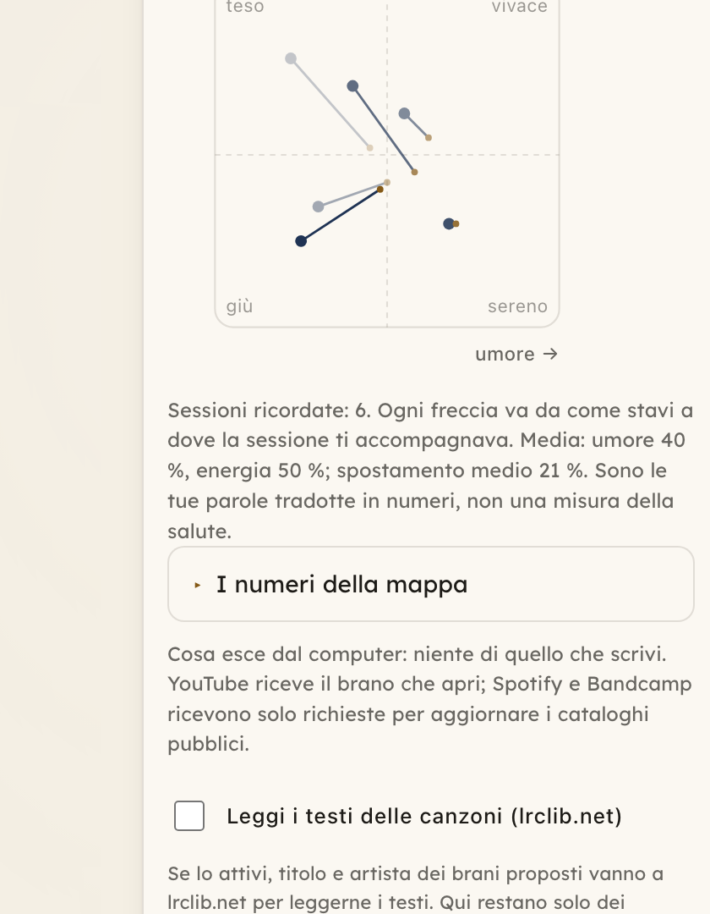
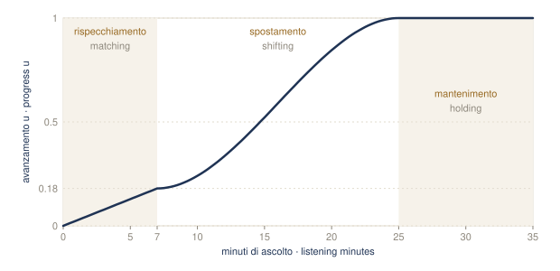
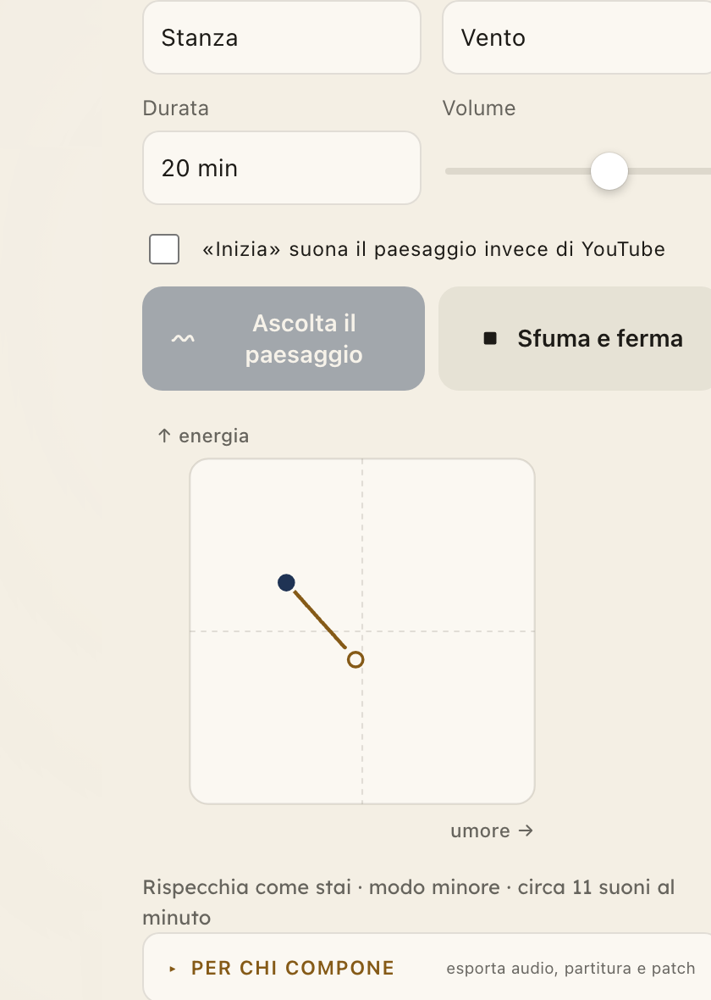
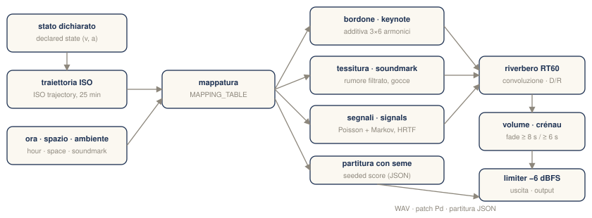
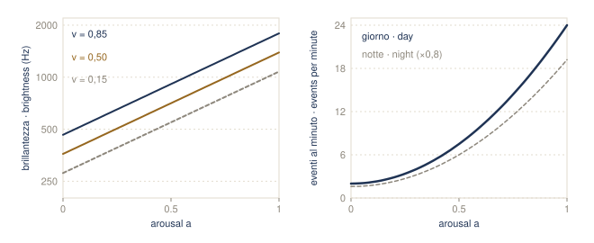
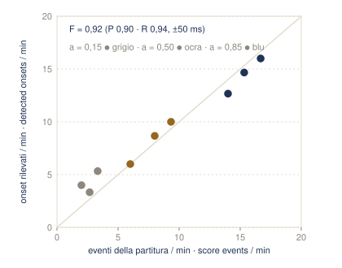
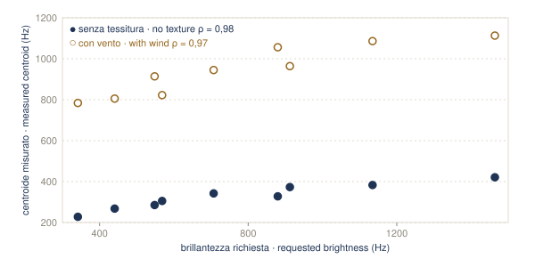
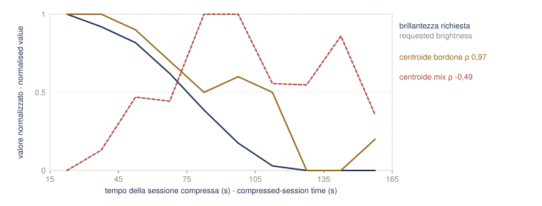

Tesi di Diploma Accademico di Secondo Livello · Second-level Academic Diploma thesis
Ascolto, paesaggio sonoro generativo e media che confortano. Un'estensione per browser che calcola sul dispositivo
Listening, generative soundscape and comforting media. A browser extension that computes on the device
Anno accademico 2025/2026 · Edizione 6.0 · Academic year 2025/2026 · Edition 6.0
Questa è l'edizione 6.0 della tesi, riscritta per intero in forma bilingue a fronte: ogni paragrafo italiano ha accanto il suo corrispettivo inglese. Descrive il software Auscultrix alla versione 6.0.0 e sostituisce le edizioni 4.33 e 5.0, che restano archiviate nel repository.
This is edition 6.0 of the thesis, fully rewritten as a facing bilingual text: every Italian paragraph has its English counterpart beside it. It describes the Auscultrix software at version 6.0.0 and replaces editions 4.33 and 5.0, which remain archived in the repository.
Rispetto alla 5.0 cambiano tre cose. Primo, il testo è stato confrontato riga per riga con il codice, con le misure e con le fonti: ogni affermazione che non reggeva è stata corretta (l'elenco completo è nell'Appendice B). Secondo, si aggiungono due parti nuove, il paesaggio sonoro generativo (Capitolo 9) e la verifica quantitativa (Capitolo 12), che portano il lavoro dentro gli ambiti del Sound Design generativo, della progettazione dello spazio sonoro e dell'analisi dei dati. Terzo, il titolo: la formula «musicoterapia digitale» della prima edizione indicava una pratica clinica che la tesi non svolge. Il titolo proposto in copertina è da concordare con il relatore secondo le regole dell'Accademia.
Three things change from 5.0. First, the text was checked line by line against the code, the measurements and the sources: every claim that did not hold has been corrected (the full list is in Appendix B). Second, two new parts are added, the generative soundscape (Chapter 9) and the quantitative verification (Chapter 12), which bring the work into the fields of generative sound design, sound-space design and data analysis. Third, the title: the phrase "digital music therapy" of the first edition named a clinical practice the thesis does not perform. The title proposed on the cover is to be agreed with the supervisor according to the Academy's rules.
Ogni numero riportato ha una fonte nel repository: un test, un file di misure, uno script che lo rigenera. I percorsi sono indicati in carattere monospaziato. Il testo usa il carattere Lexend, disegnato per ridurre lo sforzo di lettura. Non contiene contatti privati, credenziali né dati di terzi.
Every reported number has a source in the repository: a test, a measurement file, a script that regenerates it. Paths are given in monospaced type. The text is set in Lexend, a typeface designed to reduce reading effort. It contains no private contacts, credentials or third-party data.
A chi crede che la tecnologia possa ascoltare senza giudicare, e che la musica resti il linguaggio più universale dell'anima.
To those who believe technology can listen without judging, and that music remains the most universal language of the soul.
Desidero innanzitutto esprimere alla mia famiglia il riconoscimento più profondo per l'amore incondizionato, la pazienza e il sostegno che mi hanno accompagnato lungo tutto il percorso accademico e umano che culmina in questo lavoro. Senza la loro presenza costante, nulla di ciò che segue sarebbe stato possibile.
I wish first to thank my family for their unconditional love, patience and support throughout the academic and human path that culminates in this work. Without their constant presence, nothing that follows would have been possible.
Un sentito ringraziamento va al Teatro Coppola di Catania, luogo di formazione culturale; al gruppo di campeggio «i Catalizzatori», comunità di esperienza condivisa; e ai contesti formativi di riabilitazione psicofisica che hanno orientato la riflessione sul benessere emotivo alla base di Auscultrix, senza dettagli clinici riservati né dati personali di terzi.
Heartfelt thanks go to Teatro Coppola in Catania, a place of cultural formation; to the camping group "i Catalizzatori", a community of shared experience; and to the formative rehabilitation contexts that oriented the reflection on emotional wellbeing underlying Auscultrix, without confidential clinical details or third-party personal data.
Ringrazio i professori che hanno accompagnato il mio percorso presso l'Accademia di Belle Arti di Catania, nel Triennio (DAPL11 Cinema, Regia Filmmaking) e nel Biennio DASL08 (Arti e Tecnologie Digitali).
I thank the professors who accompanied my studies at the Accademia di Belle Arti di Catania, in the first-level diploma (DAPL11 Cinema, Filmmaking) and in the second-level DASL08 programme (Arts and Digital Technologies).
Desidero infine esprimere la mia profonda gratitudine al Prof. Lorenzo Di Silvestro, relatore di questa tesi, e al Prof. Stefano Zorzanello, correlatore, per la guida costante, la pazienza e le preziose indicazioni metodologiche.
Finally, my deep gratitude to Prof. Lorenzo Di Silvestro, thesis supervisor, and Prof. Stefano Zorzanello, co-supervisor, for constant guidance, patience and methodological advice.
Auscultrix (dal latino auscultare, «ascoltare con attenzione», con il suffisso d'agente femminile -trix: «colei che ascolta») è un'estensione per browser che chiede alla persona come sta e le propone musica, un paesaggio sonoro generato sul momento e media che confortano: libri, film, serie, podcast, giochi calmi. La proposta segue il principio ISO: parte dallo stato dichiarato e si sposta gradualmente verso uno stato più sereno. Tutto il calcolo avviene sul dispositivo; non esiste un server, non c'è telemetria, il testo scritto non viene mai salvato.
Auscultrix (from Latin auscultare, "to listen attentively", with the feminine agent suffix -trix: "she who listens") is a browser extension that asks people how they feel and offers them music, a soundscape generated on the spot, and comforting media: books, films, series, podcasts, calm games. The offer follows the ISO principle: it starts from the declared state and moves gradually toward a calmer one. All computation happens on the device; there is no server, no telemetry, and the written text is never saved.
La tesi risponde a tre domande. Progettuale: come si costruisce uno strumento quotidiano di accompagnamento emotivo che non diagnostichi, non sorvegli e non dipenda da un servizio remoto? Sonora: si può comporre in tempo reale, nel browser, un ambiente sonoro che segua quel percorso, e verificarne il comportamento acustico sull'uscita? Computazionale: quanto è affidabile, e in che limiti, la lettura dell'umore da un testo libero?
The thesis answers three questions. Design: how is a daily tool for emotional company built that does not diagnose, does not surveil and does not depend on a remote service? Sound: can a sound environment that follows that path be composed in real time, in the browser, and its acoustic behaviour verified on its output? Computational: how reliable, and within what limits, is reading mood from free text?
I risultati principali sono quattro. (1) Un'architettura Manifest V3 che gira su Chrome, Firefox e Safari da un'unica base di codice, con un progetto Xcode per l'App Store. (2) Un motore di composizione generativa (bordone additivo, tessiture procedurali, segnali stocastici collocati nello spazio, riverbero per convoluzione) guidato da una mappatura affetto → suono dichiarata parametro per parametro, con un gemello in Pure Data. (3) Una verifica acustica sull'uscita del motore: picco ≤ −9,2 dBFS, loudness tra −29 e −25 LUFS (ITU-R BS.1770-4), onset rilevati con F = 0,92, brillantezza e centroide spettrale con ρ = 0,98; la stessa verifica ha trovato due difetti, poi corretti, e un conflitto tra indizi che resta aperto. (4) Una valutazione del motore di lettura dell'umore su 24.703 frasi inglesi e 3.065 commenti italiani annotati da persone (valenza: r da 0,20 a 0,52 in inglese, 0,31 in italiano; nessuna validità per l'arousal) e su due set interni con intervalli bootstrap, baseline e test di McNemar.
There are four main results. (1) A Manifest V3 architecture that runs on Chrome, Firefox and Safari from a single code base, with an Xcode project for the App Store. (2) A generative composition engine (additive drone, procedural textures, stochastic spatialised signals, convolution reverb) driven by an affect-to-sound mapping declared parameter by parameter, with a Pure Data twin. (3) An acoustic verification on the engine's output: peak ≤ −9.2 dBFS, loudness between −29 and −25 LUFS (ITU-R BS.1770-4), onsets detected with F = 0.92, brightness and spectral centroid with ρ = 0.98; the same verification found two defects, since corrected, and a cue conflict that remains open. (4) An evaluation of the mood-reading engine on 24,703 English sentences and 3,065 Italian comments annotated by people (valence: r from 0.20 to 0.52 in English, 0.31 in Italian; no validity for arousal) and on two internal sets with bootstrap intervals, baselines and McNemar tests.
Auscultrix non è un dispositivo medico e la tesi non ne dichiara effetti sulla salute. L'effetto sulle persone non è stato misurato: il Capitolo 12 propone gli studi per farlo.
Auscultrix is not a medical device and the thesis claims no health effects. The effect on people has not been measured: Chapter 12 proposes the studies to do so.
Parole chiave: paesaggio sonoro, audio generativo, principio ISO, modello circomplesso, analisi affettiva del testo, privacy by design, estensioni per browser, Web Audio, Pure Data.
Keywords: soundscape, generative audio, ISO principle, circumplex model, affective text analysis, privacy by design, browser extensions, Web Audio, Pure Data.
Capitolo · Chapter
1
Introduction
Questa tesi nasce nel Diploma Accademico di Secondo Livello DASL08, Arti e Tecnologie Digitali, dell'Accademia di Belle Arti di Catania, dopo un Triennio in Cinema con indirizzo Regia (DAPL11). Si colloca all'incrocio di tre pratiche che il corso tiene insieme: il progetto di interfacce e prototipi, la composizione e la progettazione del suono, l'implementazione software. Non è un trattato clinico né la documentazione di un prodotto sanitario: è un lavoro di ricerca progettuale che si chiede come le arti digitali possano accompagnare il benessere emotivo quotidiano senza prendere in prestito il linguaggio della diagnosi.
This thesis was developed within the second-level Academic Diploma DASL08, Arts and Digital Technologies, at the Accademia di Belle Arti di Catania, after a first-level diploma in Cinema and Film Directing (DAPL11). It sits at the crossing of three practices the programme holds together: interface and prototype design, sound composition and design, and software implementation. It is neither a clinical treatise nor the documentation of a health product: it is design research asking how the digital arts can keep people company in their daily emotional life without borrowing the language of diagnosis.
La domanda è maturata osservando due ambienti molto diversi: il reparto di riabilitazione psicofisica dell'Ospedale Busacca di Scicli e il Teatro Coppola di Catania. In entrambi ricorre lo stesso bisogno: strumenti che si possano usare anche fuori da una seduta strutturata, che non richiedano competenze tecniche, che non espongano dati delicati a piattaforme opache e che non trasformino l'ascolto in sovrastimolazione.
The question took shape while observing two very different settings: the psychophysical rehabilitation ward of the Busacca Hospital in Scicli and the Teatro Coppola in Catania. Both share the same need: tools that can be used outside a structured session, that require no technical skills, that do not expose sensitive data to opaque platforms and that do not turn listening into overstimulation.
Il browser è il luogo in cui molte persone ascoltano già musica. Un'estensione vive accanto ai player che si usano ogni giorno, si installa da uno store ufficiale e non richiede un'applicazione separata. È anche un ambiente vincolato: Manifest V3 vieta il codice remoto, impone permessi dichiarati e un ciclo di vita che può interrompere il programma in qualunque momento. Questi vincoli, come si vedrà, sono diventati materiale di progetto.
The browser is where many people already listen to music. An extension lives beside the players people use every day, installs from an official store and needs no separate application. It is also a constrained environment: Manifest V3 forbids remote code, requires declared permissions and has a life cycle that may suspend the program at any moment. These constraints, as will be seen, became design material.
Il lavoro risponde a tre domande, ciascuna legata a un ambito del corso.
The work answers three questions, each tied to an area of the programme.
Le tre domande sono deliberatamente non cliniche. Auscultrix non valuta patologie, non produce punteggi diagnostici e non sostituisce medici, psicologi o musicoterapeuti. Il suo perimetro è il benessere: rende esplicito ciò che le persone fanno già, scegliere musica e storie secondo come si sentono, e lo fa in modo ispezionabile.
The three questions are deliberately non-clinical. Auscultrix does not assess conditions, produce diagnostic scores or replace doctors, psychologists or music therapists. Its scope is wellbeing: it makes explicit what people already do, choosing music and stories according to how they feel, and does so in an inspectable way.
Dalle domande discendono otto obiettivi operativi:
Eight operational objectives follow from the questions:
Il contributo della tesi non è un singolo algoritmo, ma la coerenza tra domanda, gesto artistico, implementazione ed etica dichiarata, verificata con strumenti quantitativi. In concreto:
The contribution of the thesis is not a single algorithm but the coherence of question, artistic gesture, implementation and declared ethics, verified with quantitative tools. Concretely:
Auscultrix è un nome d'agente femminile latino formato da auscultare, «ascoltare con attenzione», e dal suffisso -trix, lo stesso di nutrix e victrix: «colei che ascolta». Il nome descrive la funzione (un ascolto attento, non giudicante) e dichiara un genere grammaticale femminile, in contrasto con il neutro-maschile di default della tecnologia di consumo. Il verbo ha anche un senso medico, l'auscultazione; il progetto lo usa nel senso originario e più largo, quello dell'ascolto.
Auscultrix is a Latin feminine agent noun formed from auscultare, "to listen attentively", and the suffix -trix, as in nutrix and victrix: "she who listens". The name describes the function (attentive, non-judging listening) and declares a feminine grammatical gender, against the default neutral-masculine of consumer technology. The verb also has a medical sense, auscultation; the project uses it in its original and broader sense, that of listening.
È una tesi in Arti e Tecnologie Digitali e va valutata come tale: per la coerenza tra domanda, opera, implementazione ed etica. Il metodo unisce la Design Science Research (Peffers et al., 2007), che struttura la ricerca attraverso la costruzione e la valutazione di un artefatto, e la ricerca artistica (Borgdorff, 2012), per cui l'artefatto è insieme dimostrazione e opera.
This is a thesis in Arts and Digital Technologies and should be assessed as such: by the coherence of question, work, implementation and ethics. The method combines Design Science Research (Peffers et al., 2007), which structures research through building and evaluating an artefact, and artistic research (Borgdorff, 2012), for which the artefact is both demonstration and work.
Il concetto che regge il progetto è quello di media che confortano: la pratica volontaria, domestica e non clinica in cui musica, suoni, libri, film e paesaggi lenti accompagnano la regolazione dell'umore. Va distinto da due campi vicini. La musicoterapia è una disciplina clinica con terapeuta, repertori e protocolli: la tesi non la pratica e non la rivendica, e ne prende un solo meccanismo, il principio ISO, come regola di progetto. La psicologia dei media, con la teoria del mood management (Zillmann, 1988) e il concetto di comfort media (Grady, Eden e Wolfers, 2026), fornisce invece il quadro proprio: le persone scelgono attivamente i media per regolare l'umore.
The concept behind the project is comforting media: the voluntary, domestic, non-clinical practice in which music, sounds, books, films and slow landscapes accompany mood regulation. It must be distinguished from two neighbouring fields. Music therapy is a clinical discipline with a therapist, repertoires and protocols: the thesis does not practise or claim it, and takes a single mechanism from it, the ISO principle, as a design rule. Media psychology, with mood management theory (Zillmann, 1988) and the concept of comfort media (Grady, Eden and Wolfers, 2026), provides the proper framework: people actively choose media to regulate their mood.
Ogni affermazione sul prodotto è collocata su una scala a quattro livelli, introdotta nel Capitolo 3: funziona tecnicamente; è scientificamente plausibile; è validata sperimentalmente; è validata clinicamente. Nessuna funzione di Auscultrix raggiunge il quarto livello, e la tesi non lo dichiara.
Every claim about the product is placed on a four-level scale introduced in Chapter 3: works technically; is scientifically plausible; is experimentally validated; is clinically validated. No Auscultrix function reaches the fourth level, and the thesis does not claim it.
Il Capitolo 2 ricostruisce lo stato dell'arte: emozione e musica, principio ISO e sue prove, indizi musicali dell'emozione, paesaggio sonoro e progettazione acustica, audio generativo, analisi affettiva del testo, privacy dei dati affettivi. Il Capitolo 3 espone il metodo e i livelli di evidenza. Il Capitolo 4 formalizza i requisiti. I Capitoli 5 e 6 descrivono architettura e interfaccia. I Capitoli 7 e 8 trattano il modello affettivo e la selezione musicale. Il Capitolo 9 è dedicato al paesaggio sonoro generativo. Il Capitolo 10 riguarda riproduzione, Visione e media che confortano. Il Capitolo 11 affronta privacy, sicurezza, etica, regole e distribuzione, App Store compreso. Il Capitolo 12 riporta la verifica quantitativa e il piano di validazione; il Capitolo 13 conclude. Seguono il glossario, la corrispondenza con le correzioni, le istruzioni per riprodurre ogni risultato e la bibliografia.
Chapter 2 reviews the state of the art: emotion and music, the ISO principle and its evidence, musical cues of emotion, soundscape and acoustic design, generative audio, affective text analysis, privacy of affective data. Chapter 3 sets out the method and the levels of evidence. Chapter 4 formalises the requirements. Chapters 5 and 6 describe architecture and interface. Chapters 7 and 8 cover the affective model and music selection. Chapter 9 is devoted to the generative soundscape. Chapter 10 covers playback, Vision and comforting media. Chapter 11 addresses privacy, safety, ethics, regulation and distribution, including the App Store. Chapter 12 reports the quantitative verification and the validation plan; Chapter 13 concludes. The glossary, the list of corrections, instructions to reproduce every result and the bibliography follow.
Capitolo · Chapter
2
State of the art
Il punto di partenza è il modello circomplesso dell'affetto (Russell, 1980): ogni stato emotivo si colloca in un piano con due assi ortogonali, la valenza (dal dispiacere al piacere) e l'arousal o attivazione (dalla quiete all'eccitazione). La gioia sta in alto a destra, la tristezza in basso a sinistra, l'ansia e la rabbia in alto a sinistra, la calma in basso a destra. Per il progetto il modello ha un pregio decisivo: riduce l'esperienza a un punto in un piano, non a un'etichetta psichiatrica, e permette di parlare di percorsi.
The starting point is the circumplex model of affect (Russell, 1980): every emotional state lies in a plane with two orthogonal axes, valence (from displeasure to pleasure) and arousal or activation (from quiet to excitement). Joy sits top right, sadness bottom left, anxiety and anger top left, calm bottom right. For the project the model has one decisive advantage: it reduces experience to a point in a plane, not to a psychiatric label, and makes it possible to speak of paths.
Che la musica induca e moduli emozioni è ben documentato. Juslin e Sloboda (2010) raccolgono i meccanismi: valutazione, contagio emotivo, memoria episodica, condizionamento, aspettativa. Koelsch (2014) ne sintetizza i correlati neurali nei circuiti della ricompensa. Saarikallio (2011) mostra che le persone usano spontaneamente la musica per regolarsi lungo tutta la vita: per consolarsi, distrarsi, ricordare, caricarsi. Brattico, Bogert e Jacobsen (2013) sottolineano che l'esperienza estetica musicale è un processo nel tempo, non un evento puntuale. Da qui tre indicazioni: modellare lo stato come punto nel piano; assecondare una pratica che esiste già; progettare l'ascolto come arco temporale.
That music induces and modulates emotion is well documented. Juslin and Sloboda (2010) collect the mechanisms: appraisal, emotional contagion, episodic memory, conditioning, expectancy. Koelsch (2014) summarises their neural correlates in reward circuits. Saarikallio (2011) shows that people spontaneously use music to regulate themselves across the lifespan: to console, distract, remember, energise. Brattico, Bogert and Jacobsen (2013) stress that musical aesthetic experience is a process in time, not a point event. Three design indications follow: model the state as a point in the plane; support a practice that already exists; design listening as a temporal arc.
La teoria del mood management (Zillmann, 1988) descrive l'esposizione ai media come autoregolazione: si sceglie ciò che migliora o mantiene lo stato. La tradizione degli usi e gratificazioni aggiunge che il pubblico seleziona attivamente. Il concetto recente di comfort media (Grady, Eden e Wolfers, 2026) definisce il conforto mediale come un esito distinto: valenza positiva, bassa attivazione, senso di sicurezza, spesso legato alla familiarità e alla ripetizione. Il conforto è rifugio, non prestazione. Ne derivano tre vincoli di progetto: accanto alla scoperta, il familiare; nessun salto brusco di energia o valenza; sicurezza costruita con ripetibilità, reversibilità e assenza di sorveglianza. Gli oggetti transizionali di Winnicott (1971) offrono un nome antico alla stessa intuizione.
Mood management theory (Zillmann, 1988) describes media exposure as self-regulation: people choose what improves or sustains their state. The uses and gratifications tradition adds that audiences select actively. The recent concept of comfort media (Grady, Eden and Wolfers, 2026) defines media comfort as a distinct outcome: positive valence, low activation, a sense of safety, often tied to familiarity and repetition. Comfort is refuge, not performance. Three design constraints follow: alongside discovery, the familiar; no abrupt jump in energy or valence; safety built through repeatability, reversibility and absence of surveillance. Winnicott's (1971) transitional objects give an old name to the same intuition.
Il principio ISO, formulato da Altshuler (1948) nella pratica musicoterapica, risponde alla domanda se la musica debba rispecchiare l'umore o cambiarlo: entrambe le cose, in sequenza. Prima si rispecchia lo stato attuale, poi ci si sposta gradualmente verso quello desiderato. Nel piano di Russell è un percorso, ed è esattamente ciò che Auscultrix implementa (Capitolo 8).
The ISO principle, formulated by Altshuler (1948) in music-therapy practice, answers whether music should mirror mood or change it: both, in sequence. First one matches the current state, then shifts gradually toward the desired one. In Russell's plane it is a path, and this is exactly what Auscultrix implements (Chapter 8).
Le prove sperimentali sono più deboli della tradizione clinica. Heiderscheit e Madson (2015) descrivono un caso singolo. Starcke, Mayr e von Georgi (2021), in uno studio controllato con 107 persone dopo un'induzione di tristezza, trovano che la sequenza triste → allegra produce più affetto positivo delle sequenze triste → triste e allegra → triste, ma non significativamente più della sola musica allegra. C'è anche un rischio documentato: in chi tende a rimuginare, l'ascolto prolungato di musica triste può aumentare l'umore depresso (Garrido e Schubert, 2015). Il progetto ne trae due conseguenze: il principio ISO è una regola di progetto plausibile, non un meccanismo dimostrato; la fase di rispecchiamento va limitata nel tempo (§8.2).
Experimental evidence is weaker than the clinical tradition. Heiderscheit and Madson (2015) describe a single case. Starcke, Mayr and von Georgi (2021), in a controlled study with 107 people after a sadness induction, find that the sad → happy sequence produces more positive affect than the sad → sad and happy → sad sequences, but not significantly more than happy music alone. There is also a documented risk: in people prone to rumination, prolonged listening to sad music can increase depressed mood (Garrido and Schubert, 2015). The project draws two consequences: the ISO principle is a plausible design rule, not a demonstrated mechanism; the matching phase must be limited in time (§8.2).
Una lunga linea di ricerca chiede quali caratteristiche del suono comunichino quali emozioni. Hevner (1937) collega altezza e tempo a qualità espressive. Juslin e Laukka (2003), in una rassegna di 145 studi su voce e musica, trovano un codice condiviso: tempo veloce, intensità alta e articolazione staccata comunicano attivazione; modo maggiore e registro acuto comunicano valenza positiva. Gagnon e Peretz (2003) separano sperimentalmente modo e tempo e mostrano che entrambi contribuiscono al giudizio allegro/triste, il modo più del tempo. Eerola, Friberg e Bresin (2013) manipolano sei indizi in modo fattoriale e trovano effetti in gran parte lineari e additivi: il modo pesa soprattutto sulla valenza, tempo e dinamica sull'attivazione, il timbro su entrambe.
A long line of research asks which sound features communicate which emotions. Hevner (1937) links pitch and tempo to expressive qualities. Juslin and Laukka (2003), reviewing 145 studies on voice and music, find a shared code: fast tempo, high intensity and staccato articulation communicate activation; major mode and high register communicate positive valence. Gagnon and Peretz (2003) separate mode and tempo experimentally and show that both contribute to happy/sad judgements, mode more than tempo. Eerola, Friberg and Bresin (2013) manipulate six cues factorially and find largely linear and additive effects: mode weighs mostly on valence, tempo and dynamics on activation, timbre on both.
Questa letteratura è la base della mappatura del paesaggio sonoro (§9.4). Ha due limiti da tenere presenti: gli studi usano soprattutto musica tonale occidentale e ascoltatori occidentali; e misurano l'emozione percepita (che cosa la musica esprime), non sempre quella indotta (che cosa la persona prova).
This literature grounds the soundscape mapping (§9.4). It has two limits to keep in mind: studies mostly use Western tonal music and Western listeners; and they measure perceived emotion (what the music expresses), not always induced emotion (what the listener feels).
Con The Tuning of the World Schafer (1977) fonda gli studi sul paesaggio sonoro e propone una «nuova forma di arte e di scienza», la progettazione acustica. Distingue la tonica (lo sfondo continuo su cui tutto si staglia, spesso non ascoltato consapevolmente), i segnali (suoni in primo piano che attirano l'attenzione) e le impronte sonore (suoni che danno identità a un luogo). La distinzione è il vocabolario con cui il paesaggio di Auscultrix è organizzato.
With The Tuning of the World Schafer (1977) founded soundscape studies and proposed "a new form of art and science", acoustic design. He distinguishes the keynote (the continuous background against which everything stands out, often not consciously heard), signals (foreground sounds that attract attention) and soundmarks (sounds that give a place its identity). The distinction is the vocabulary through which the Auscultrix soundscape is organised.
Il Repertorio degli effetti sonori di Augoyard e Torgue (1995) offre una grammatica più fine: decine di effetti (bordone, mascheramento, filtraggio, metabole, ripetizione, crénau, coupure…) descritti a cavallo tra acustica, psicologia della percezione, architettura ed estetica. Blesser e Salter (2007) introducono l'«architettura aurale»: lo spazio si ascolta, e il rapporto tra suono diretto e riverberato è l'indizio principale della distanza. LaBelle (2006) e Licht (2019) ricostruiscono la sound art come pratica uscita dalla sala da concerto, dall'installazione alla radio e al web. Un'estensione per browser che compone uno spazio sonoro attorno a chi ascolta appartiene, in piccolo, a questa genealogia.
Augoyard and Torgue's (1995) Repertoire of sonic effects offers a finer grammar: dozens of effects (drone, masking, filtering, metabole, repetition, crénau, coupure…) described across acoustics, perception psychology, architecture and aesthetics. Blesser and Salter (2007) introduce "aural architecture": space is heard, and the ratio of direct to reverberant sound is the main cue to distance. LaBelle (2006) and Licht (2019) trace sound art as a practice that left the concert hall, from installation to radio and the web. A browser extension that composes a sound space around the listener belongs, on a small scale, to this genealogy.
L'audio generativo produce suono con regole o processi invece di fissarlo una volta per tutte. Xenakis (1992) ha portato in composizione i processi stocastici, tra cui le distribuzioni di Poisson per la densità degli eventi. La musica ambient ha reso popolare l'idea di una musica che accompagna più livelli di attenzione senza imporne uno. Il procedural audio (Farnell, 2010) costruisce i suoni dell'ambiente (vento, pioggia, acqua) come modelli dei processi fisici che li producono, a partire da rumore e filtri, invece di registrarli. Nella pratica del corso questi processi si scrivono in Pure Data (Bianchi, Cipriani e Giri, 2017).
Generative audio produces sound through rules or processes instead of fixing it once and for all. Xenakis (1992) brought stochastic processes into composition, including Poisson distributions for event density. Ambient music popularised the idea of music that accompanies several levels of attention without imposing one. Procedural audio (Farnell, 2010) builds environmental sounds (wind, rain, water) as models of the physical processes that produce them, starting from noise and filters, instead of recording them. In the programme's practice these processes are written in Pure Data (Bianchi, Cipriani and Giri, 2017).
Di Scipio (2003) propone un passo ulteriore: sistemi ecosistemici in cui il suono è l'interfaccia, e il sistema ascolta l'ambiente e se ne lascia modificare in un anello di retroazione. È un riferimento utile anche per dire che cosa Auscultrix non fa: il suo paesaggio dipende dalla persona e dall'ora, ma non ascolta l'ambiente con un microfono, per una scelta di privacy che il Capitolo 9 discute.
Di Scipio (2003) takes a further step: ecosystemic systems in which sound is the interface, and the system listens to the environment and lets itself be modified in a feedback loop. It is a useful reference also to say what Auscultrix does not do: its soundscape depends on the person and the hour, but does not listen to the environment through a microphone, a privacy choice discussed in Chapter 9.
Leggere l'emozione in un testo si fa con due famiglie di metodi. I metodi a lessico e regole assegnano a ogni parola un valore (per esempio le norme NRC VAD di Mohammad, 2018, per l'inglese, e l'adattamento italiano delle ANEW di Montefinese et al., 2014) e lo combinano con regole per negazione e intensificatori; VADER (Hutto e Gilbert, 2014) è il caso più noto. I modelli appresi (classificatori, reti neurali) sono in media più accurati ma meno ispezionabili e richiedono dati di addestramento nella lingua d'uso. Per l'italiano esistono corpora annotati, come FEEL-IT (Bianchi, Nozza e Hovy, 2021).
Reading emotion in text is done with two families of methods. Lexicon-and-rule methods assign each word a value (for example the NRC VAD norms of Mohammad, 2018, for English, and the Italian adaptation of ANEW by Montefinese et al., 2014) and combine it with rules for negation and intensifiers; VADER (Hutto and Gilbert, 2014) is the best-known case. Learned models (classifiers, neural networks) are more accurate on average but less inspectable, and require training data in the language of use. Annotated corpora exist for Italian, such as FEEL-IT (Bianchi, Nozza and Hovy, 2021).
Auscultrix sceglie un lessico con regole, per tre ragioni: deve girare sul dispositivo senza scaricare un modello; ogni decisione deve essere spiegabile; il testo è breve e scritto in prima persona («oggi sono a pezzi»), un dominio diverso da quelli su cui i modelli sono addestrati. La scelta ha un prezzo, misurato nel Capitolo 12.
Auscultrix chooses a lexicon with rules, for three reasons: it must run on the device without downloading a model; every decision must be explainable; the text is short and written in the first person ("I'm in pieces today"), a domain unlike those models are trained on. The choice has a cost, measured in Chapter 12.
I dati sull'umore sono delicati: il GDPR protegge con regole rafforzate i dati relativi alla salute, compresa quella mentale. Picard (1997), fondando l'affective computing, avvertiva che i sistemi capaci di elaborare affetti pongono problemi di consenso, accuratezza e sorveglianza. La Privacy by Design (Cavoukian, 2009) chiede che la protezione sia nell'architettura. La risposta di Auscultrix è architettonica: non c'è un server Auscultrix, e ciò che non viene trasmesso non può essere intercettato né venduto. Il Capitolo 11 dice con precisione quali servizi vengono comunque contattati, e perché.
Mood data are sensitive: the GDPR gives reinforced protection to data concerning health, mental health included. Picard (1997), founding affective computing, warned that systems able to process affect raise issues of consent, accuracy and surveillance. Privacy by Design (Cavoukian, 2009) asks for protection to be built into the architecture. Auscultrix's answer is architectural: there is no Auscultrix server, and what is not transmitted cannot be intercepted or sold. Chapter 11 states precisely which services are nonetheless contacted, and why.
L'accompagnamento visivo può arricchire l'ascolto ma anche sovrastimolare. Le crisi fotoconvulsive sono indotte soprattutto da lampi tra 3 e 60 Hz, con il massimo rischio tra 15 e 25 Hz (Harding e Jeavons, 1994); le WCAG fissano a tre lampi al secondo la soglia (criterio 2.3.1; W3C, 2023). La Visione di Auscultrix nasce dentro questo vincolo (§10.2).
Visual accompaniment can enrich listening but also overstimulate. Photoconvulsive seizures are induced mainly by flashes between 3 and 60 Hz, with the highest risk between 15 and 25 Hz (Harding and Jeavons, 1994); WCAG sets the threshold at three flashes per second (criterion 2.3.1; W3C, 2023). Auscultrix's Vision is designed within this constraint (§10.2).
Esistono app di benessere con musica, ma chiedono account, abbonamenti e cloud. Esistono sistemi di raccomandazione (Schedl et al., 2015), ma ottimizzano l'engagement e profilano. Esistono generatori di suoni rilassanti, ma raramente dichiarano le regole o ne misurano l'uscita, e spesso promettono effetti (per esempio con i battimenti binaurali) che la letteratura non sostiene (Garcia-Argibay, Santed e Reales, 2019). Non risulta uno strumento che unisca: ingresso emotivo esplicito e non diagnostico; selezione e composizione guidate da una regola dichiarata; un paesaggio sonoro generativo con le sue regole pubbliche e misurate; calcolo locale con dati minimi e cancellabili; distribuzione gratuita su tre browser. È questo lo spazio che il lavoro occupa.
Wellbeing apps with music exist, but they require accounts, subscriptions and cloud. Recommender systems exist (Schedl et al., 2015), but they optimise engagement and profile users. Relaxing-sound generators exist, but rarely declare their rules or measure their output, and often promise effects (for instance with binaural beats) that the literature does not support (Garcia-Argibay, Santed and Reales, 2019). No tool appears to combine: explicit, non-diagnostic emotional input; selection and composition guided by a declared rule; a generative soundscape with public, measured rules; local computation with minimal, erasable data; free distribution on three browsers. This is the space the work occupies.
Capitolo · Chapter
3
Method
Il lavoro segue le sei fasi della Design Science Research (Peffers et al., 2007): identificare il problema, definire gli obiettivi, progettare e sviluppare l'artefatto, dimostrarlo, valutarlo, comunicarlo. La valutazione non è un capitolo finale ma un ciclo: ogni versione del software è stata misurata, e le misure hanno cambiato il progetto. Alla cornice si aggiungono i principi del design centrato sulla persona (Norman, 2013; Sanders e Stappers, 2008): poca complessità visibile, riscontri chiari, azioni reversibili, linguaggio non tecnico.
The work follows the six phases of Design Science Research (Peffers et al., 2007): identify the problem, define objectives, design and develop the artefact, demonstrate it, evaluate it, communicate it. Evaluation is not a final chapter but a cycle: every version of the software was measured, and the measurements changed the design. Human-centred design principles complement the framework (Norman, 2013; Sanders and Stappers, 2008): little visible complexity, clear feedback, reversible actions, non-technical language.
Come ricerca artistica (Borgdorff, 2012), il software è anche un'opera: il diario come forma, la sessione come arco temporale, il suono come spazio. La formazione cinematografica di chi scrive si legge nelle scelte di tempo: la dissolvenza lenta, il montaggio a tre fotogrammi al secondo, lo zoom che respira con la durata del brano, il paesaggio sonoro che entra e si congeda con un crénau.
As artistic research (Borgdorff, 2012), the software is also a work: the diary as form, the session as temporal arc, sound as space. The author's film training shows in the choices of time: the slow dissolve, three-frames-per-second editing, the zoom that breathes with the track's length, the soundscape that enters and takes its leave with a crénau.
Per non confondere ciò che il software fa con ciò che si spera produca, ogni affermazione è collocata su una scala a quattro livelli.
To avoid confusing what the software does with what it is hoped to achieve, every claim is placed on a four-level scale.
| Livello · Level | Significato | Meaning |
|---|---|---|
| A | Funziona tecnicamente: verificato da test automatici che passano | Works technically: verified by passing automated tests |
| B | Scientificamente plausibile: coerente con la letteratura, non misurato su questo prodotto | Scientifically plausible: consistent with the literature, not measured on this product |
| C | Validato sperimentalmente: confrontato con dati annotati da persone, mai visti in sviluppo, con intervalli di confidenza | Experimentally validated: compared with human-annotated data unseen during development, with confidence intervals |
| D | Validato clinicamente: effetti su benessere o salute misurati in uno studio con persone | Clinically validated: effects on wellbeing or health measured in a study with people |
La Tabella 12.5 riassume dove si colloca ogni funzione. In sintesi: tutto raggiunge A; molto raggiunge B; solo la valenza letta dal testo inglese raggiunge, in parte, C; nulla raggiunge D.
Table 12.5 summarises where each function stands. In short: everything reaches A; much reaches B; only valence read from English text partly reaches C; nothing reaches D.
Tra la 5.0 e la 6.0 il lavoro è stato sottoposto a una revisione sistematica: ogni affermazione della tesi è stata confrontata con il codice, con le misure e con le fonti primarie. Ne sono uscite trentacinque correzioni, dall'errata versione citata alle affermazioni non verificabili («supera web-ext lint»), dalle funzioni descritte ma inesistenti a una formula scritta in una forma diversa da quella implementata. L'Appendice B le elenca con il punto in cui questa edizione le recepisce. Il metodo è semplice e, per un lavoro che si misura con la fiducia delle persone, necessario: dire esattamente che cosa è stato fatto e che cosa è stato misurato.
Between 5.0 and 6.0 the work underwent a systematic review: every claim in the thesis was compared with the code, the measurements and the primary sources. Thirty-five corrections came out of it, from a wrongly cited version to unverifiable claims ("passes web-ext lint"), from functions described but non-existent to a formula written in a form other than the implemented one. Appendix B lists them with the place where this edition takes them on board. The method is simple and, for a work that deals with people's trust, necessary: say exactly what was done and what was measured.
La verifica usa quattro strumenti, tutti nel repository e tutti eseguibili da chi legge (Appendice C):
OfflineAudioContext e misurato sulla sua uscita (§12.4);Verification uses four instruments, all in the repository and all runnable by the reader (Appendix C):
OfflineAudioContext and measured on its output (§12.4);Una regola vale per tutti: i set di verifica si guardano una volta sola, e se dopo averli guardati il sistema cambia, quel set non è più una stima indipendente e va dichiarato (§12.3). Il software di build si rifiuta di creare i pacchetti se un test di unità fallisce o se il motore affettivo scende sotto le soglie di regressione.
One rule applies throughout: test sets are looked at only once, and if the system changes after looking at them, that set is no longer an independent estimate and must be declared as such (§12.3). The build software refuses to create the packages if a unit test fails or if the affective engine falls below the regression thresholds.
Ogni numero della tesi è rigenerabile. Il motore sonoro usa un generatore pseudo-casuale con seme: stessa entrata, stesso seme, stesso audio (§12.4, A5). Le statistiche bootstrap usano a loro volta un seme fisso. I dati esterni non sono nel pacchetto per licenza e dimensione, ma gli script indicano dove scaricarli e producono gli stessi file di risultati. I rapporti dei test e la matrice di tracciabilità tra requisiti e test sono generati dall'esecuzione, non scritti a mano.
Every number in the thesis can be regenerated. The sound engine uses a seeded pseudo-random generator: same input, same seed, same audio (§12.4, A5). Bootstrap statistics also use a fixed seed. External data are not in the package for licensing and size reasons, but the scripts say where to obtain them and produce the same result files. Test reports and the requirement-to-test traceability matrix are generated by the run, not written by hand.
Quattro vincoli hanno la stessa autorità dei requisiti funzionali. Nessun linguaggio diagnostico: l'interfaccia chiede «come stai?», non somministra scale. Nessun server: l'elaborazione affettiva resta sul dispositivo. Sicurezza sensoriale: le immagini restano sotto le soglie di lampeggiamento, il suono sotto limiti di livello, densità e modulazione. Trasparenza: chi cura i cataloghi è identificabile, l'avvertenza è esplicita, le risorse di aiuto sono sempre raggiungibili. Ciò che è escluso lo è di conseguenza: la rilevazione passiva dell'umore (da comportamento, voce, volto o sensori), l'ascolto dell'ambiente con il microfono, i battimenti binaurali presentati come terapia.
Four constraints carry the same authority as functional requirements. No diagnostic language: the interface asks "how are you?", it does not administer scales. No server: affective processing stays on the device. Sensory safety: images stay below flash thresholds, sound below limits of level, density and modulation. Transparency: whoever curates the catalogues is identifiable, the disclaimer is explicit, help resources are always reachable. What is excluded follows: passive mood detection (from behaviour, voice, face or sensors), listening to the environment through the microphone, binaural beats presented as therapy.
Va precisato che l'umore viene comunque stimato dal software: dal testo che la persona sceglie di scrivere, dalle etichette, dal cursore e dai colori di una foto che sceglie di caricare. Ciò che è escluso è la stima a sua insaputa.
It should be made clear that mood is still estimated by the software: from the text the person chooses to write, from the labels, the slider and the colours of a photo they choose to upload. What is excluded is estimation without their knowledge.
Capitolo · Chapter
4
Requirements
I requisiti sono scritti nella forma in cui il software li implementa nella versione 6.0.0. Ognuno ha un identificativo e uno o più test che lo verificano; la matrice completa (55 requisiti) è generata a ogni esecuzione della suite in docs/tecnico/tracciabilita.md.
Requirements are written in the form in which the software implements them in version 6.0.0. Each has an identifier and one or more tests that verify it; the complete matrix (55 requirements) is generated at every run of the suite in docs/tecnico/tracciabilita.md.
| ID | Requisito | Requirement | Test |
|---|---|---|---|
| RF1 | Ingresso: testo libero, sei etichette, cursore dell'energia 0–100, foto facoltativa analizzata sul dispositivo | Input: free text, six labels, energy slider 0–100, optional photo analysed on the device | UT-MOOD-04/05, E2E-02/14 |
| RF2 | Catalogo da fonti documentate; ogni brano dichiara la provenienza delle sue coordinate | Catalogue from documented sources; every track declares the provenance of its coordinates | UT-PROV-01…04 |
| RF3 | Playlist con principio ISO: rispecchiamento, spostamento, mantenimento; nel percorso solo brani con coordinate documentate | ISO playlist: matching, shifting, holding; only tracks with documented coordinates on the path | UT-ISO-01…13 |
| RF4 | Riproduzione su YouTube in una scheda aperta dall'estensione, che resta della persona | Playback on YouTube in a tab opened by the extension, which stays the person's | E2E-02/07, UT-OWN-01…05 |
| RF5 | Avanzamento solo nella scheda della sessione e solo sul video della sessione | Advance only in the session tab and only on the session video | E2E-18…20 |
| RF6 | Visione facoltativa, 3 fps, sotto le soglie WCAG di lampeggiamento | Optional Vision, 3 fps, below WCAG flash thresholds | UT-PHOTO-01…03, UT-ZOOM-01, E2E-10/11 |
| RF7 | Media che confortano: libri, film, serie, podcast, giochi calmi, ordinati con la stessa logica | Comforting media: books, films, series, podcasts, calm games, ranked with the same logic | E2E-02 (solo funzionale · functional only) |
| RF8 | Sicurezza: parole di crisi → scheda di aiuto prima di tutto, nessuna apertura automatica | Safety: words of crisis → help card first, nothing opens automatically | UT-SAFE-01…06 |
| RF9 | Paesaggio sonoro generativo sulla traiettoria ISO, sul dispositivo (6.0) | Generative soundscape on the ISO trajectory, on the device (6.0) | UT-SND-01…09, E2E-21 |
| RF10 | Esportazioni riproducibili: WAV, partitura JSON, patch Pure Data (6.0) | Reproducible exports: WAV, JSON score, Pure Data patch (6.0) | UT-WAV-01, UT-PD-01/02 |
| RF11 | Mappa del diario sul piano valenza–arousal, con tabella equivalente (6.0) | Diary map on the valence–arousal plane, with an equivalent table (6.0) | UT-CX-01 |
| RF12 | Lingua dell'interfaccia italiano/inglese, scelta manuale | Interface language Italian/English, manual choice | UT-I18N-01…04 |
| ID | Requisito | Requirement | Verifica · Verification |
|---|---|---|---|
| RNF1 | Il testo scritto e la foto non lasciano il dispositivo e il testo non viene salvato | Written text and photo never leave the device and the text is never stored | UT-PRIV-01/03, UT-SEC-05 |
| RNF2 | Ogni chiave salvata è inventariata; «Dimentica tutto» cancella ogni dato personale | Every stored key is inventoried; "Forget everything" erases all personal data | UT-PRIV-02/04 |
| RNF3 | Nessun codice remoto, CSP esplicita, nessuna telemetria | No remote code, explicit CSP, no telemetry | UT-SEC-03/04/05 |
| RNF4 | Accessibilità WCAG 2.2: bersagli ≥ 24 px (principali ≥ 44 px), contrasto, tastiera, modalità scura e colori forzati | WCAG 2.2 accessibility: targets ≥ 24 px (main ≥ 44 px), contrast, keyboard, dark mode and forced colours | E2E a11y |
| RNF5 | Suono: picco ≤ −1 dBFS, dissolvenze ≥ 8/6 s, 40 Hz–12 kHz, ≤ 24 eventi/min, modulazioni ≤ 0,25 Hz | Sound: peak ≤ −1 dBFS, fades ≥ 8/6 s, 40 Hz–12 kHz, ≤ 24 events/min, modulations ≤ 0.25 Hz | UT-SND-02, E2E-21 |
| RNF6 | Prestazioni: pannello pronto in meno di 1 s (mediana), sessione costruita in meno di 100 ms | Performance: panel ready in under 1 s (median), session built in under 100 ms | E2E perf |
| RNF7 | Portabilità: Chrome ≥ 116, Firefox ≥ 142, Safari ≥ 17 da un'unica base di codice | Portability: Chrome ≥ 116, Firefox ≥ 142, Safari ≥ 17 from one code base | UT-SEC-08, build |
| RNF8 | Riproducibilità: stesso stato e stesso seme danno la stessa composizione | Reproducibility: same state and seed give the same composition | UT-SND-01, A5 |
Auscultrix non è un dispositivo medico e non intende diventarlo: non diagnostica, non monitora disturbi, non misura esiti clinici, non sostituisce un percorso di cura. Non rileva l'umore passivamente, non usa il microfono, non registra come è andata una sessione, non ha account, non ha server, non raccoglie telemetria. Non promette effetti del suono sul corpo.
Auscultrix is not a medical device and does not intend to become one: it does not diagnose, monitor conditions, measure clinical outcomes or replace care. It does not detect mood passively, does not use the microphone, does not record how a session went, has no accounts, no server and collects no telemetry. It promises no bodily effects of sound.
Capitolo · Chapter
5
Architecture
Auscultrix è un'estensione Manifest V3 composta da quattro parti. Il pannello (sidepanel.html/.js) è il diario: raccoglie l'umore, mostra l'analisi, la playlist, il paesaggio sonoro, i media che confortano e «Le tue cose». Il service worker (background.js) coordina la sessione d'ascolto: apre o riusa la scheda del player, serializza gli avanzamenti, gestisce la Visione e l'aggiornamento periodico dei cataloghi pubblici. I content script vivono nella sola scheda YouTube della sessione: uno preme play, uno segnala la fine del brano, uno disegna la Visione. Il documento offscreen, solo su Chrome, analizza l'audio della scheda per rendere la Visione reattiva.
Auscultrix is a Manifest V3 extension made of four parts. The panel (sidepanel.html/.js) is the diary: it collects mood and shows the analysis, the playlist, the soundscape, the comforting media and "Your things". The service worker (background.js) coordinates the listening session: it opens or reuses the player tab, serialises advances, manages Vision and the periodic refresh of public catalogues. Content scripts live only in the session's YouTube tab: one presses play, one reports the end of the track, one draws Vision. The offscreen document, Chrome only, analyses the tab audio to make Vision reactive.
La logica di dominio sta in moduli ES puri nella cartella lib/, senza dipendenze dal DOM e testabili in Node: lettura dell'umore (mood.js, affect-lexicon.js), sicurezza (safety.js), playlist ISO (playlist.js), provenienza delle coordinate (affect-provenance.js), modello utente (user-model.js), inventario dei dati (data-inventory.js), stato della sessione (session-state.js) e, nella 6.0, il paesaggio sonoro (soundscape.js), le misure audio (audio-metrics.js), l'esportazione WAV (wav.js) e il gemello Pure Data (pd-patch.js). La parte difficile da testare, l'interfaccia, è tenuta sottile; la parte importante da testare, le decisioni, è pura.
Domain logic lives in pure ES modules in the lib/ folder, with no DOM dependencies and testable in Node: mood reading (mood.js, affect-lexicon.js), safety (safety.js), ISO playlist (playlist.js), coordinate provenance (affect-provenance.js), user model (user-model.js), data inventory (data-inventory.js), session state (session-state.js) and, in 6.0, the soundscape (soundscape.js), audio measurement (audio-metrics.js), WAV export (wav.js) and the Pure Data twin (pd-patch.js). The hard-to-test part, the interface, is kept thin; the important-to-test part, the decisions, is pure.
Il paesaggio sonoro è interamente nel pannello: non scambia messaggi con il service worker, non apre schede, non usa la rete. Il modello (soundscape.js) calcola la partitura; la sintesi (soundscape-audio.js) la suona con Web Audio, nello stesso codice per l'ascolto dal vivo e per il rendering offline.
The soundscape lives entirely in the panel: it exchanges no messages with the service worker, opens no tabs, uses no network. The model (soundscape.js) computes the score; synthesis (soundscape-audio.js) plays it with Web Audio, with the same code for live listening and offline rendering.
In Manifest V3 il service worker può essere sospeso in qualunque momento, quindi nessuno stato di lunga durata vive in memoria. Ciò che deve sopravvivere a una sospensione ma non alla chiusura del browser (la scheda del player, la sessione attiva, il livello di sicurezza) sta in chrome.storage.session; ciò che deve restare tra un avvio e l'altro (preferenze, numeri delle ultime sessioni) sta in chrome.storage.local. Il testo scritto e la foto restano nella memoria del pannello o della sessione, mai su disco. Il test E2E-16 sospende il worker e verifica che sessione e scheda sopravvivano.
In Manifest V3 the service worker may be suspended at any moment, so no long-lived state lives in memory. What must survive a suspension but not the closing of the browser (the player tab, the active session, the safety level) is kept in chrome.storage.session; what must persist across restarts (preferences, numbers of recent sessions) is kept in chrome.storage.local. Written text and photo stay in panel or session memory, never on disk. Test E2E-16 suspends the worker and checks that session and tab survive.
Un'estensione che apre YouTube deve decidere fin dove si spinge. La regola della 6.0, introdotta nella 5.1.1 dopo una segnalazione d'uso, è che la scheda resta della persona. Auscultrix agisce solo sulla scheda che ha aperto e solo sul video che vi ha messo. Ogni video che compare nella scheda viene classificato (classifyPlayerVideo): della sessione se è quello annotato; in arrivo se è un altro video mentre la navigazione di Auscultrix non è ancora arrivata (per esempio la raccomandazione mostrata per un attimo dall'autoplay di YouTube); della persona in tutti gli altri casi. In quest'ultimo caso la sessione va in pausa e YouTube prosegue con la propria riproduzione automatica. I test UT-OWN-01…05 e E2E-18…20 coprono questi casi.
An extension that opens YouTube must decide how far it goes. The 6.0 rule, introduced in 5.1.1 after a usage report, is that the tab stays the person's. Auscultrix acts only on the tab it opened and only on the video it put there. Every video that appears in the tab is classified (classifyPlayerVideo): the session's if it is the annotated one; incoming if it is another video while Auscultrix's navigation has not yet arrived (for example the recommendation YouTube's autoplay shows for a moment); the person's in every other case. In that last case the session pauses and YouTube continues with its own autoplay. Tests UT-OWN-01…05 and E2E-18…20 cover these cases.
| Permesso · Permission | Perché | Why |
|---|---|---|
storage | dati locali e di sessione | local and session data |
sidePanel | il pannello laterale | the side panel |
scripting | reiniettare i content script nella scheda della sessione e premere play | re-inject content scripts into the session tab and press play |
tabCapture, offscreen | Visione audio-reattiva, solo se accesa | audio-reactive Vision, only when on |
alarms | aggiornamento periodico dei cataloghi pubblici | periodic refresh of public catalogues |
| 9 host | YouTube (4), miniature, pagina pubblica Spotify, LRCLIB (solo su consenso), Bandcamp (2) | YouTube (4), thumbnails, public Spotify page, LRCLIB (consent only), Bandcamp (2) |
Nella 5.1 sono stati tolti il permesso tabs, che dava accesso agli URL di tutte le schede, e 39 host di servizi non usati. La Content Security Policy è esplicita (script-src 'self'; object-src 'self'; base-uri 'none'): nessuno script remoto o in linea, nessun eval. Nessun messaggio esterno è accettato, e i messaggi dei content script valgono solo se arrivano dalla scheda della sessione. Il pacchetto non contiene credenziali: la build si rifiuta di impacchettare se ne trova una (UT-SEC-11).
In 5.1 the tabs permission, which exposed the URLs of every tab, and 39 hosts of unused services were removed. The Content Security Policy is explicit (script-src 'self'; object-src 'self'; base-uri 'none'): no remote or inline scripts, no eval. No external message is accepted, and content-script messages count only if they come from the session tab. The package contains no credentials: the build refuses to package if it finds one (UT-SEC-11).
La disciplina descritta sopra (logica pura, API del browser dietro contratti minimi, capacità che degradano con eleganza) permette di derivare le altre varianti da quella Chrome con una trasformazione del manifest e la sostituzione di due moduli, senza un fork.
The discipline described above (pure logic, browser APIs behind minimal contracts, capabilities that degrade gracefully) makes it possible to derive the other variants from the Chrome one with a manifest transformation and the replacement of two modules, without a fork.
| Funzione · Function | Chrome | Firefox | Safari (6.0) |
|---|---|---|---|
| Pannello · Panel | sidePanel | sidebar_action | scheda dedicata · dedicated tab |
| Background | service worker (modulo) | pagina evento + caricatore · event page + loader | pagina non persistente + caricatore · non-persistent page + loader |
| Visione · Vision | audio-reattiva · audio-reactive | calma, non reattiva · calm, non-reactive | calma, non reattiva · calm, non-reactive |
| Paesaggio sonoro · Soundscape | Web Audio | Web Audio | Web Audio |
| Donazione · Donation | sì (solo adulti, fuori crisi) · yes (adults, outside crisis) | sì · yes | no (App Store 3.2.1) |
| Pacchetto · Package | zip, Chrome Web Store | zip, AMO | app macOS/iOS, Xcode |
Per Safari, il convertitore di Apple (safari-web-extension-converter) genera dal pacchetto un progetto Xcode con un'app contenitore e l'estensione; uno script aggiunge le icone disegnate come vettori secondo le griglie delle Human Interface Guidelines e il Privacy Manifest in tutti i target. Il progetto compila per macOS (xcodebuild, BUILD SUCCEEDED); la compilazione per iOS e la prova dentro Safari restano da fare (§11.6).
For Safari, Apple's converter (safari-web-extension-converter) generates from the package an Xcode project with a container app and the extension; a script adds icons drawn as vectors on the Human Interface Guidelines grids and the Privacy Manifest in every target. The project builds for macOS (xcodebuild, BUILD SUCCEEDED); the iOS build and the test inside Safari remain to be done (§11.6).
La variante Firefox è verificata solo staticamente, così come la Safari: la tesi non dichiara prove in quei browser che non sono state fatte. In particolare la 5.0 affermava che il pacchetto Firefox «supera web-ext lint senza errori»; nessun rapporto di lint era allegato, e l'affermazione è stata tolta finché non verrà eseguito.
The Firefox variant is verified only statically, as is the Safari one: the thesis claims no tests in those browsers that were not run. In particular 5.0 stated that the Firefox package "passes web-ext lint without errors"; no lint report was attached, and the claim has been withdrawn until it is run.
Capitolo · Chapter
6
Interface: the diary
Il pannello è una pagina di diario: carta calda con quadretti appena accennati, una riga di margine rossa, la testata come titolo scritto a mano. Niente cruscotti, niente schede impilate. La metafora dichiara che questo è uno spazio di scrittura personale, non un pannello di produttività. Nella 5.0 il linguaggio visivo è stato asciugato secondo il rigore di un'applicazione di sistema: una voce per ruolo (serif per il diario, carattere di sistema per i controlli, Lexend per la lettura lunga), gerarchia per spazio e peso più che per riquadri, materiali opachi e translucidi solo per i fogli sovrapposti, movimento come cortesia (180–260 ms, nessuno con «riduci movimento»).
The panel is a diary page: warm paper with barely visible squares, a red margin line, the masthead as a hand-written title. No dashboards, no stacked cards. The metaphor declares that this is a space of personal writing, not a productivity panel. In 5.0 the visual language was pared down with the rigour of a system application: one voice per role (serif for the diary, system face for controls, Lexend for long reading), hierarchy by space and weight rather than boxes, opaque materials and translucent ones only for floating sheets, motion as a courtesy (180–260 ms, none with "reduce motion").
tools/preview/server.mjs).Figure 6.1 — The upper part of the panel: the question, the labels, energy, the optional photo, start. Local preview (tools/preview/server.mjs).L'ordine verticale segue l'esperienza, e ciò che non serve adesso è ripiegato. In alto la testata e la lingua. Poi la domanda «Come stai, davvero?» con il campo di testo, sei etichette con testo ed emoji insieme (mai la sola icona), il cursore dell'energia e la foto facoltativa in un blocco ripiegabile. I pulsanti Inizia, Sorprendimi e Altri risultati. Poi, se servono, la scheda di aiuto; l'analisi con la lettura a voce; il momento d'ascolto su YouTube; il paesaggio sonoro (6.0); la playlist; i media che confortano; «Le tue cose» con la mappa del diario (6.0); in fondo i profili del curatore e l'avvertenza con i numeri di aiuto.
The vertical order follows the experience, and what is not needed now is folded away. At the top, the masthead and language. Then the question "How are you, really?" with the text field, six labels with text and emoji together (never the icon alone), the energy slider and the optional photo in a folding block. The Start, Surprise me and More results buttons. Then, when needed, the help card; the analysis with read-aloud; the listening moment on YouTube; the soundscape (6.0); the playlist; the comforting media; "Your things" with the diary map (6.0); at the bottom the curator's profiles and the disclaimer with help numbers.
Alla prima apertura un foglio spiega in tre passi come funziona e che cosa Auscultrix non è. In crisi nessun foglio si sovrappone alla scheda di aiuto. La richiesta facoltativa di un contributo compare solo dopo una sessione chiusa, solo a un adulto, solo se non è stato mostrato aiuto; nella versione per l'App Store non compare mai (§11.6).
At first opening a sheet explains in three steps how it works and what Auscultrix is not. In a crisis no sheet covers the help card. The optional request for a contribution appears only after a closed session, only to an adult, only if no help was shown; in the App Store version it never appears (§11.6).
I test end-to-end controllano il pannello renderizzato in modalità chiara e scura secondo un sottoinsieme dei criteri WCAG 2.2: nome accessibile di ogni controllo, contrasto del testo, dimensione dei bersagli, immagini con testo alternativo. Nell'ultima misura (7 novembre 2026): nessun controllo senza nome, nessun contrasto insufficiente su 120 coppie controllate per tema, tutti i bersagli ≥ 24 px (criterio 2.5.8) e il 79 % ≥ 44 px. La 5.0 dichiarava «tutti ≥ 44 pixel»: non era vero, e la frase è stata corretta. Il pannello è pronto in 467 ms (mediana; massimo 1.062 ms) e una sessione si costruisce in 68 ms (mediana; p95 85 ms).
End-to-end tests check the rendered panel in light and dark mode against a subset of WCAG 2.2 criteria: accessible name of every control, text contrast, target size, images with alternative text. In the latest measurement (7 November 2026): no unnamed control, no insufficient contrast among 120 pairs checked per theme, all targets ≥ 24 px (criterion 2.5.8) and 79 % ≥ 44 px. Edition 5.0 claimed "all ≥ 44 pixels": that was not true, and the sentence has been corrected. The panel is ready in 467 ms (median; maximum 1,062 ms) and a session is built in 68 ms (median; p95 85 ms).
La tipografia segue le soglie della lettura facilitata: corpo grande, righe corte, interlinea ampia, contrasto alto, focus visibile da tastiera. Il carattere di lettura è Lexend, disegnato per ridurre lo sforzo di lettura. La palette è ridefinita per la modalità scura e per i colori forzati di sistema.
Typography follows the thresholds of easy reading: large body size, short lines, generous leading, high contrast, visible keyboard focus. The reading face is Lexend, designed to reduce reading effort. The palette is redefined for dark mode and for system forced colours.
La 6.0 aggiunge in «Le tue cose» una piccola visualizzazione: le ultime sessioni ricordate disegnate sul piano valenza–arousal. Ogni sessione è una freccia dal punto dichiarato al bersaglio ISO verso cui si è mossa; le sessioni più vecchie sono più chiare. Il disegno usa le stesse coordinate che il software già conserva (numeri, mai testo) e non aggiunge dati.
Edition 6.0 adds a small visualisation to "Your things": the most recent remembered sessions drawn on the valence–arousal plane. Each session is an arrow from the declared point to the ISO target it moved toward; older sessions are lighter. The drawing uses the coordinates the software already stores (numbers, never text) and adds no data.

Tre scelte la rendono onesta. Nessuna linea di tendenza: due o tre punti non fanno un andamento, e una retta suggerirebbe un monitoraggio che lo strumento non fa. Parole esplicite: la didascalia dice che sono «le tue parole tradotte in numeri, non una misura della salute». Un'alternativa testuale: la stessa informazione è in una tabella accessibile (WCAG 1.1.1) e in una descrizione per i lettori di schermo. Nei termini della visualizzazione dei dati, la mappa privilegia l'integrità sulla persuasione: mostra i dati che ci sono, nella loro scala, senza estrapolare.
Three choices keep it honest. No trend line: two or three points do not make a trend, and a line would suggest a monitoring the tool does not do. Explicit words: the caption says these are "your words turned into numbers, not a measure of health". A text alternative: the same information is in an accessible table (WCAG 1.1.1) and in a description for screen readers. In data-visualisation terms, the map favours integrity over persuasion: it shows the data there are, on their scale, without extrapolating.
L'interfaccia è in italiano e inglese, con le stesse chiavi e gli stessi segnaposto (UT-I18N-01). La scelta manuale prevale sulla lingua del browser e si estende alla lettura a voce. Per la distribuzione su Safari, il pannello è stato confrontato con le Human Interface Guidelines di Apple: caratteri di sistema per i controlli, bersagli principali da 44 punti, palette per la modalità scura, nessun movimento con «riduci movimento», suono che parte solo da un gesto e sfuma sempre. L'icona dell'app è stata ridisegnata come vettore sulla griglia di 824 su 1024 punti di macOS e a pieno formato per iOS (§11.6).
The interface is in Italian and English, with the same keys and placeholders (UT-I18N-01). The manual choice overrides the browser language and extends to read-aloud. For distribution on Safari, the panel was checked against Apple's Human Interface Guidelines: system fonts for controls, 44-point main targets, a dark-mode palette, no motion with "reduce motion", sound that starts only from a gesture and always fades. The app icon was redrawn as a vector on the macOS 824-in-1024 grid and full-bleed for iOS (§11.6).
Capitolo · Chapter
7
The affective model
Lo stato della persona è un punto (v, a) nel piano circomplesso, con valenza v e arousal a in [0, 1]. Ha tre fonti, tutte scelte dalla persona: il testo libero e le etichette; il cursore dell'energia, che è un'autovalutazione diretta dell'attivazione, come nel Self-Assessment Manikin (Bradley e Lang, 1994); la foto, facoltativa, da cui si ricava solo una frase descrittiva dai colori, senza riconoscere che cosa ritrae.
The person's state is a point (v, a) in the circumplex plane, with valence v and arousal a in [0, 1]. It has three sources, all chosen by the person: free text and labels; the energy slider, a direct self-rating of activation, as in the Self-Assessment Manikin (Bradley and Lang, 1994); the optional photo, from which only a descriptive sentence about colours is derived, without recognising what it depicts.
Il motore (lib/mood.js, lib/affect-lexicon.js) è lessicale e a regole, e lavora in sette passi.
The engine (lib/mood.js, lib/affect-lexicon.js) is lexical and rule-based, and works in seven steps.
Con wᵢ il peso di ogni voce trovata (contrasto × salienza, dove la salienza è 0,5 più la distanza dal centro del piano) e W la loro somma:
With wᵢ the weight of each matched entry (contrast × salience, where salience is 0.5 plus the distance from the centre of the plane) and W their sum:
dove s è il valore del cursore e c la confidenza. Quando la persona sposta il cursore, la sua autovalutazione pesa metà dell'arousal finale. È una scelta motivata dalle misure: l'arousal letto dal testo non ha validità esterna (§12.2), mentre il cursore è un'autovalutazione.
where s is the slider value and c the confidence. When the person moves the slider, their self-rating weighs half of the final arousal. The choice is motivated by measurement: arousal read from text has no external validity (§12.2), whereas the slider is a self-rating.
Dallo stato si calcola un bersaglio (isoTarget): per ansia o rabbia l'arousal scende verso 0,32 e la valenza sale verso max(v + 0,25; 0,55); per tristezza o apatia la valenza sale verso max(v + 0,25; 0,48) e l'arousal sale al più fino a 0,5; con bisogno di calma l'arousal resta ≤ 0,3; uno stato buono si mantiene. Lo spostamento totale è limitato in distanza euclidea:
From the state a target is computed (isoTarget): for anxiety or anger arousal falls toward 0.32 and valence rises toward max(v + 0.25; 0.55); for sadness or apathy valence rises toward max(v + 0.25; 0.48) and arousal rises at most to 0.5; with a need for calm arousal stays ≤ 0.3; a good state is maintained. The total displacement is bounded in Euclidean distance:
Nella 5.0 il limite era per asse, così che in diagonale lo spostamento arrivava a 0,3·√2 ≈ 0,42. Il bersaglio non è mai opposto al punto di partenza: il percorso accompagna, non ribalta.
In 5.0 the bound was per axis, so a diagonal move could reach 0.3·√2 ≈ 0.42. The target is never opposite to the starting point: the path accompanies, it does not overturn.
Prima di qualunque raccomandazione il testo passa da lib/safety.js: liste di frasi in italiano e inglese per la crisi e per l'uso di sostanze, pensate per un richiamo alto (un falso allarme costa una scheda di aiuto, un mancato allarme molto di più), con l'esclusione dei «falsi amici» («drogheria», «canna da pesca», crack a joke). L'esito non è una valutazione del rischio e non sostituisce strumenti validati. Attiva soltanto: la scheda con Telefono Amico, 112 e le linee IASP, oppure quella con il Numero Verde nazionale per le dipendenze; l'assenza di avvii automatici, di musica, di paesaggio sonoro e di richieste di donazione. Il livello di crisi resta solo in memoria di sessione (UT-PRIV-05). La scheda indica anche quando le linee rispondono: il Numero Verde dell'ISS, per esempio, è attivo dal lunedì al venerdì. Il comportamento è verificato da sei test (UT-SAFE-01…06).
Before any recommendation the text goes through lib/safety.js: Italian and English phrase lists for crisis and substance use, designed for high recall (a false alarm costs a help card, a missed one much more), excluding "false friends" ("drogheria", "canna da pesca", crack a joke). The outcome is not a risk assessment and does not replace validated instruments. It triggers only: the card with Telefono Amico, 112 and the IASP lines, or the one with the national addiction helpline; the absence of automatic starts, music, soundscape and donation requests. The crisis level stays only in session memory (UT-PRIV-05). The card also says when the lines answer: the ISS helpline, for instance, operates Monday to Friday. The behaviour is verified by six tests (UT-SAFE-01…06).
Il modello utente conserva le ultime 60 sessioni come numeri: energia, valenza, bersaglio, attività scelta. Nessun punteggio di ansia o tristezza: una storia di «ansia» somiglierebbe a un monitoraggio di sintomi, che non serve allo scopo e non è proporzionato (GDPR, art. 5(1)(c)). Dopo almeno tre sessioni, lo stato dichiarato viene spostato verso la media personale di al più 0,08 (UT-UM-03): una spinta gentile, non una correzione.
The user model keeps the last 60 sessions as numbers: energy, valence, target, chosen activity. No anxiety or sadness scores: a history of "anxiety" would resemble symptom monitoring, which the purpose does not need and is not proportionate (GDPR, art. 5(1)(c)). After at least three sessions, the declared state is moved toward the personal average by at most 0.08 (UT-UM-03): a gentle nudge, not a correction.
Livello di evidenza. A per tutte le parti; B per la valenza (regole di negazione e intensità documentate in letteratura); C solo parziale, per la valenza su testi inglesi (§12.2); arousal dal testo senza validità misurabile.
Level of evidence. A for all parts; B for valence (negation and intensity rules documented in the literature); only partial C, for valence on English texts (§12.2); arousal from text without measurable validity.
Capitolo · Chapter
8
Music selection
Nel piano circomplesso il principio ISO diventa un percorso dal punto dichiarato P₀ = (v₀, a₀) al bersaglio P₁ = (v₁, a₁). Il problema computazionale è duplice: decidere dove deve trovarsi il percorso in ogni momento (la traiettoria) e scegliere, per ogni posto della playlist, il brano più vicino a quel punto senza ripetizioni e senza salti.
In the circumplex plane the ISO principle becomes a path from the declared point P₀ = (v₀, a₀) to the target P₁ = (v₁, a₁). The computational problem is twofold: deciding where the path should be at each moment (the trajectory) and choosing, for each playlist slot, the track closest to that point without repetition and without jumps.
Fino alla 5.0 la traiettoria era misurata in brani: in una lista di 40 il bersaglio si raggiungeva dopo circa due ore e mezza, e il solo rispecchiamento durava quaranta minuti, troppo a lungo alla luce del rischio documentato da Garrido e Schubert (2015). Dalla 5.1 la traiettoria è misurata in minuti d'ascolto, calcolati dalla durata reale dei brani (210 s se ignota). Con t = minuti / F, dove F = 25 min è la finestra di spostamento, limitato a 1:
Up to 5.0 the trajectory was measured in tracks: in a list of 40 the target was reached after about two and a half hours, and matching alone lasted forty minutes, too long in light of the risk documented by Garrido and Schubert (2015). Since 5.1 the trajectory is measured in listening minutes, computed from the real duration of tracks (210 s if unknown). With t = minutes / F, where F = 25 min is the shift window, capped at 1:
Nel primo 28 % della finestra (7 minuti) il percorso si sposta al più del 18 %: è il rispecchiamento. Poi una curva smoothstep porta al bersaglio senza discontinuità nella velocità: è lo spostamento. Dopo 25 minuti il punto resta sul bersaglio: è il mantenimento, e a fine playlist la sessione si chiude invece di ricominciare. La stessa funzione, isoWaypoint, guida la playlist e il paesaggio sonoro. F = 25 min è un parametro di progetto, non un valore ottimizzato su dati.
In the first 28 % of the window (7 minutes) the path moves by at most 18 %: this is matching. Then a smoothstep curve takes it to the target with no discontinuity in speed: this is shifting. After 25 minutes the point stays on the target: this is holding, and at the end of the playlist the session closes instead of starting again. The same function, isoWaypoint, drives both the playlist and the soundscape. F = 25 min is a design parameter, not a value optimised on data.

Per ogni posto della playlist si sceglie, tra i brani non ancora usati, quello con il punteggio più alto. Il termine principale è la vicinanza al punto della traiettoria, con un nucleo gaussiano:
For each playlist slot, the unused track with the highest score is chosen. The main term is closeness to the trajectory point, with a Gaussian kernel:
dove d è la distanza euclidea tra le coordinate del brano e P(t), C un termine di contesto in [0, 1] (generi coerenti con le parole, motivazione, nostalgia) e δ un insieme di piccoli termini dichiarati: priorità per provenienza (corpus musicoterapico +0,10, altri corpora annotati +0,04, misure audio +0,02, brani non fondati −0,06), novità (+0,06), variazione di sessione (≤ 0,07), penalità per il già proposto (−0,22) e per i salti oltre 0,35 dal brano calibrato precedente. Vincoli: al più tre brani per artista, un posto su tre a brani mai proposti, un posto su quattro al corpus musicoterapico se presente. Nella 5.0 la vicinanza pesava il 28 % e parte del contesto era ancorata al bersaglio, sicché i primi brani non rispecchiavano lo stato dichiarato.
where d is the Euclidean distance between the track's coordinates and P(t), C a context term in [0, 1] (genres consistent with the words, motivation, nostalgia) and δ a set of small declared terms: provenance priority (music-therapy corpus +0.10, other annotated corpora +0.04, audio measurement +0.02, ungrounded tracks −0.06), novelty (+0.06), session variation (≤ 0.07), a penalty for what was already offered (−0.22) and for jumps beyond 0.35 from the previous calibrated track. Constraints: at most three tracks per artist, one slot in three for never-offered tracks, one in four for the music-therapy corpus when present. In 5.0 closeness weighed 28 % and part of the context was anchored to the target, so the first tracks did not mirror the declared state.
Il percorso è buono quanto le coordinate dei brani. Ogni brano dichiara da dove vengono (lib/affect-provenance.js): annotate a mano in un corpus (musicoterapico, 80 brani; underground, 77; italiano, 47; per bambini), misurate sulle anteprime audio (484 brani del seme), oppure ignote. Nel percorso calibrato entrano solo brani con coordinate documentate. Nella 4.33, 7.326 brani del catalogo Emergente avevano coordinate segnaposto identiche (0,45; 0,50), e nel catalogo predefinito il principio ISO di fatto non operava. Dalla 5.1 quei brani compaiono solo nel mantenimento, al più uno su quattro, con l'etichetta «scoperta»; con meno di 12 brani calibrati la playlist si dichiara «lista di scoperta».
The path is only as good as the tracks' coordinates. Each track declares where they come from (lib/affect-provenance.js): annotated by hand in a corpus (music therapy, 80 tracks; underground, 77; Italian, 47; children's), measured on audio previews (484 tracks of the seed), or unknown. Only tracks with documented coordinates enter the calibrated path. In 4.33, 7,326 tracks of the Emergente catalogue had identical placeholder coordinates (0.45; 0.50), and in the default catalogue the ISO principle effectively did not operate. Since 5.1 those tracks appear only during holding, at most one in four, labelled "discovery"; with fewer than 12 calibrated tracks the playlist declares itself a "discovery list".
La «base» dei brani del corpus musicoterapico (relaxation-research, clinical-repertoire…) è una categoria, non il riferimento a uno studio. La 5.0 parlava di una selezione «scientificamente approvata»: nessuna approvazione esiste, e la frase corretta è che la selezione è tracciabile. Lo stesso vale per un brano spesso citato come «il più rilassante», per il quale non risulta una pubblicazione con revisione tra pari ma una ricerca commerciale riportata dalla stampa.
The "basis" of tracks in the music-therapy corpus (relaxation-research, clinical-repertoire…) is a category, not a reference to a study. Edition 5.0 spoke of a "scientifically approved" selection: no approval exists, and the correct statement is that the selection is traceable. The same applies to a track often cited as "the most relaxing", for which no peer-reviewed publication was found, only commercial research reported by the press.
Quando un brano ha misure audio ma non coordinate annotate, l'energia è una combinazione lineare con pesi scelti a mano, non stimati su dati:
When a track has audio measurements but no annotated coordinates, energy is a linear combination with hand-chosen weights, not estimated from data:
con T = (BPM − 60)/120, L = (dB + 45)/40, D la danceability, A l'acousticness, tutti limitati in [0, 1] e con i pesi rinormalizzati sulle grandezze disponibili. La 5.0 scriveva l'ultimo termine come −0,20·A e lo diceva «equivalente»: le due forme ordinano i brani allo stesso modo ma differiscono di una costante 0,20, e le coordinate contano perché vengono confrontate con i punti della traiettoria. La formula scritta qui è quella implementata (UT-EN-01 riproduce l'esempio E = 0,584). Senza misure la valenza è dichiarata ignota (0,5): fino alla 5.0 veniva stimata dalla popolarità, una relazione senza fondamento.
with T = (BPM − 60)/120, L = (dB + 45)/40, D danceability, A acousticness, all capped to [0, 1] and with weights renormalised over the available quantities. Edition 5.0 wrote the last term as −0.20·A and called it "equivalent": the two forms rank tracks the same way but differ by a constant 0.20, and coordinates matter because they are compared with trajectory points. The formula written here is the implemented one (UT-EN-01 reproduces the example E = 0.584). Without measurements valence is declared unknown (0.5): up to 5.0 it was estimated from popularity, a relationship without foundation.
Una simulazione (tests/sim/iso-quality.mjs) costruisce playlist da 40 brani per sei umori tipici su due cataloghi e misura la distanza media tra ogni brano e il suo punto della traiettoria e il salto massimo tra brani consecutivi. Catalogo «Le solite care»: distanza media 0,05–0,13, salto massimo ≤ 0,33. Catalogo «Emergente»: 0,07–0,20, ma 0,46 per l'euforia, perché nel repertorio calibrato mancano brani euforici. È una misura di geometria (livello A), non di efficacia.
A simulation (tests/sim/iso-quality.mjs) builds 40-track playlists for six typical moods on two catalogues and measures the mean distance between each track and its trajectory point and the largest jump between consecutive tracks. "Old favourites" catalogue: mean distance 0.05–0.13, largest jump ≤ 0.33. "Emerging" catalogue: 0.07–0.20, but 0.46 for euphoria, because the calibrated repertoire lacks euphoric tracks. It is a measure of geometry (level A), not of efficacy.
Capitolo · Chapter
9
The generative soundscape
Le playlist di Auscultrix dipendono da YouTube: brani di altri, la rete, la pubblicità, un'interfaccia che non si controlla. Nella 6.0 si aggiunge un secondo modo di ascoltare, che non dipende da nulla di esterno: un paesaggio sonoro composto sul momento, sul dispositivo, che segue la stessa traiettoria ISO della musica. La domanda di progetto (D2) è se un ambiente sonoro possa essere progettato, con regole pubbliche, invece che scelto da un catalogo, e se il suo comportamento possa essere verificato misurandone l'uscita.
Auscultrix playlists depend on YouTube: other people's tracks, the network, advertising, an interface beyond control. Edition 6.0 adds a second way of listening that depends on nothing external: a soundscape composed on the spot, on the device, following the same ISO trajectory as the music. The design question (Q2) is whether a sound environment can be designed, with public rules, instead of chosen from a catalogue, and whether its behaviour can be verified by measuring its output.
Il paesaggio è un'opera generativa nel senso del corso di Sound Design – Generative Audio: regole e processi stocastici producono un suono sempre diverso, modulato da ingressi esterni. Dipende dalla persona (lo stato dichiarato; la scelta di spazio, ambiente e durata) e dal contesto (l'ora del giorno). Ed è un progetto di spazio sonoro nel senso del corso di Progettazione degli spazi sonori: organizza figure di fondo e di primo piano, simula uno spazio acustico con le sue leggi, decide come il suono entra, abita e lascia l'ambiente di chi ascolta.
The soundscape is a generative work in the sense of the Sound Design – Generative Audio course: rules and stochastic processes produce an ever-different sound, modulated by external inputs. It depends on the person (the declared state; the choice of space, surroundings and length) and on the context (the time of day). And it is a sound-space design in the sense of the Sound Space Design course: it organises background and foreground figures, simulates an acoustic space with its laws, and decides how sound enters, inhabits and leaves the listener's surroundings.

Il paesaggio ha tre strati, con i ruoli che Schafer (1977) assegna alle figure del paesaggio sonoro.
The soundscape has three layers, with the roles Schafer (1977) assigns to the figures of the soundscape.
| Strato · Layer | Figura · Figure | Sintesi · Synthesis | Effetti · Effects |
|---|---|---|---|
| bordone: tonica, quinta, terza del modo · drone: root, fifth, modal third | tonica · keynote | additiva, 3 voci × 6 armonici · additive, 3 voices × 6 harmonics | bordone, metabole · drone, metabole |
| vento, mare, pioggia · wind, sea, rain | impronta · soundmark | sottrattiva da rumore rosa; gocce granulari · subtractive from pink noise; granular drops | mascheramento, filtraggio · masking, filtering |
| campane · bells | segnali · signals | additiva inarmonica (1; 2,32; 4,25) · inharmonic additive (1; 2.32; 4.25) | ripetizione, crénau · repetition, crénau |
Il bordone è la tonica: uno sfondo continuo, che non chiede ascolto e su cui tutto si staglia. È fatto di tre voci, tonica, quinta giusta e terza del modo corrente, ciascuna con sei armonici la cui ampiezza decresce come h^−τ, dove τ è l'inclinazione spettrale. Un secondo oscillatore accordato tre cent sopra la fondamentale produce un battimento lentissimo che tiene vivo il suono. Un inviluppo d'ampiezza lento, il respiro, lo fa pulsare di 3 dB a circa sei cicli al minuto quando l'arousal è basso.
The drone is the keynote: a continuous background that asks for no listening and against which everything stands out. It is made of three voices, root, perfect fifth and the third of the current mode, each with six harmonics whose amplitude falls as h^−τ, where τ is the spectral tilt. A second oscillator tuned three cents above the fundamental produces a very slow beating that keeps the sound alive. A slow amplitude envelope, the breath, makes it pulse by 3 dB at about six cycles per minute when arousal is low.
L'impronta dà identità al luogo: vento, mare o pioggia, a scelta della persona, costruiti come processi e non come registrazioni (Farnell, 2010). Il vento è rumore rosa filtrato da un passa-banda il cui centro compie una passeggiata aleatoria tra 250 e 950 Hz, più rapida quando l'arousal è alto. Il mare è rumore filtrato con un inviluppo d'ampiezza di 0,06–0,12 Hz, un'onda ogni 8–16 secondi. La pioggia è un fruscio passa-alto più gocce: cinguettii discendenti di 30 ms, da 4 a 18 al secondo. L'impronta svolge anche una funzione di mascheramento: copre i piccoli rumori della stanza.
The soundmark gives the place an identity: wind, sea or rain, chosen by the person, built as processes rather than recordings (Farnell, 2010). Wind is pink noise filtered by a band-pass whose centre performs a random walk between 250 and 950 Hz, faster when arousal is high. Sea is filtered noise with a 0.06–0.12 Hz amplitude envelope, a wave every 8–16 seconds. Rain is a high-passed hiss plus drops: 30 ms falling chirps, 4 to 18 per second. The soundmark also performs masking: it covers small noises of the room.
I segnali sono campane sintetiche con tre parziali inarmoniche, la più alta delle quali decade per prima, come nei metalli. Sono gli unici suoni in primo piano, e sono rari: al massimo uno ogni 2,5 secondi in media. Ognuno ha una posizione nello spazio.
The signals are synthetic bells with three inharmonic partials, the highest of which decays first, as in metals. They are the only foreground sounds, and they are rare: at most one every 2.5 seconds on average. Each has a position in space.
Due effetti del repertorio sono esclusi di proposito: la coupure, il taglio netto, perché un'interruzione brusca è l'opposto di ciò che il paesaggio deve fare; e la sincronizzazione su un impulso regolare, perché un pulsare stabile invita il corpo a seguirlo. Anche la fine è progettata: al termine della durata scelta il suono sfuma e lascia il posto al silenzio, che il pannello nomina («anche il silenzio fa parte del paesaggio»). Il silenzio non è un'assenza di funzione ma l'ultimo stato del percorso.
Two effects of the repertoire are deliberately excluded: the coupure, the clean cut, because an abrupt interruption is the opposite of what the soundscape should do; and synchronisation to a regular pulse, because a steady beat invites the body to follow it. The ending is designed too: at the end of the chosen length the sound fades and gives way to silence, which the panel names ("silence is part of the soundscape too"). Silence is not an absence of function but the last state of the path.
La persona sceglie lo spazio: stanza (tempo di riverberazione RT60 = 0,6 s), navata (2,8 s) o campo aperto (nessun riverbero). Il riverbero è una convoluzione con una risposta all'impulso sintetica, rumore con inviluppo esponenziale che scende di 60 dB in RT60 secondi, come nella definizione del tempo di riverberazione (ISO 3382-1):
The person chooses the space: room (reverberation time RT60 = 0.6 s), nave (2.8 s) or open field (no reverberation). Reverberation is a convolution with a synthetic impulse response, noise with an exponential envelope that drops by 60 dB in RT60 seconds, as in the definition of reverberation time (ISO 3382-1):
Un filtro passa-basso a un polo, sempre più chiuso man mano che la coda procede, imita l'assorbimento delle alte frequenze da parte dell'aria e delle superfici. Ogni segnale ha un angolo θ e una distanza r tra 1 e 4 metri. Il guadagno segue la legge della distanza inversa, −6 dB a ogni raddoppio, perché l'intensità decresce con il quadrato della distanza:
A one-pole low-pass filter, closing progressively as the tail proceeds, imitates the absorption of high frequencies by air and surfaces. Each signal has an angle θ and a distance r between 1 and 4 metres. Gain follows the inverse-distance law, −6 dB per doubling, because intensity decreases with the square of distance:
In più, la quota inviata al riverbero cresce con r: il rapporto tra suono diretto e riverberato è il principale indizio di distanza negli spazi chiusi (Blesser e Salter, 2007). Nell'ascolto dal vivo la posizione è resa con un PannerNode HRTF, pensato per l'ascolto in cuffia; nei rendering e nelle misure con un panning a potenza costante.
In addition, the share sent to the reverb grows with r: the ratio of direct to reverberant sound is the main distance cue in enclosed spaces (Blesser and Salter, 2007). In live listening position is rendered with an HRTF PannerNode, intended for headphone listening; in renders and measurements with constant-power panning.

In ogni istante il paesaggio legge il punto (v, a) sulla traiettoria ISO (la stessa funzione delle playlist, §8.2) e lo traduce in parametri sonori. La traduzione usa gli indizi musicali la cui relazione con l'emozione è meglio documentata (§2.4): modo e registro per la valenza; tempo (qui, densità degli eventi), intensità, brillantezza e articolazione per l'attivazione.
At every moment the soundscape reads the point (v, a) on the ISO trajectory (the same function as the playlists, §8.2) and translates it into sound parameters. The translation uses the musical cues whose relation to emotion is best documented (§2.4): mode and register for valence; tempo (here, event density), intensity, brightness and articulation for activation.
| Parametro · Parameter | Da · From | Tipo · Type | Regola · Rule | Fonte · Source |
|---|---|---|---|---|
| modo · mode | v | one-to-one | minore v < 0,38; maggiore v > 0,60; sospeso; isteresi 0,04 | Gagnon e Peretz 2003; Eerola et al. 2013 |
| registro · register | v | one-to-one | 1 + 2v ottave sopra la tonica · octaves above root | Juslin e Laukka 2003 |
| ampiezza stereo · width | v | one-to-one | ±(30 + 40v)° | scelta di progetto · design choice |
| densità · density | a | one-to-one | λ = 2 + 22a² eventi/min, ≤ 24 | Gagnon e Peretz 2003 |
| attacco · attack | a | one-to-one | 4 + 60(1 − a) ms | Juslin e Laukka 2003 |
| decadimento · decay | a | one-to-one | 2,5 + 3,5(1 − a) s | Juslin e Laukka 2003 |
| livello bordone · drone level | a | one-to-one | −20 + 4a dB | Juslin e Laukka 2003 |
| livello tessitura · texture level | a | one-to-one | −28 + 8a dB | Augoyard e Torgue 1995 |
| respiro · breath | a | one-to-one | 0,10 Hz se a ≤ 0,45, poi fino a 0,20 Hz; 3 dB | Lehrer e Gevirtz 2014 (plausibile) |
| ripetizione · repetition | a | one-to-one | p = 0,15 + 0,35(1 − a) | Huron 2006 |
| brillantezza · brightness | v, a | many-to-one | B = 250 · 8^(0,65a + 0,35v) Hz | Eerola et al. 2013 |
| inclinazione · tilt | v, a | many-to-one | τ = 1,6 − 0,4a − 0,4v | Eerola et al. 2013 |
| notte · night | ora · hour | one-to-many | B × 0,85; λ × 0,8 tra le 21 e le 6 | scelta di progetto · design choice |
Nel lessico del corso di Progettazione degli spazi sonori, la mappatura combina tutte le modalità di controllo: one-to-one (la valenza sceglie il modo), one-to-many (l'arousal guida densità, attacco, livello, respiro), many-to-one (valenza e arousal insieme guidano la brillantezza), e quindi nel complesso many-to-many. Il controllo è user-dependent (lo stato e le scelte della persona) ed environment-dependent nel solo senso del tempo: di notte il suono si fa più scuro e più rado. I pesi della brillantezza (0,65 per l'arousal, 0,35 per la valenza) riflettono il fatto che negli studi la brillantezza è legata soprattutto all'attivazione; sono scelti a mano, non stimati.
In the vocabulary of the Sound Space Design course, the mapping combines all control modes: one-to-one (valence chooses the mode), one-to-many (arousal drives density, attack, level, breath), many-to-one (valence and arousal together drive brightness), and so, overall, many-to-many. Control is user-dependent (the person's state and choices) and environment-dependent only in the sense of time: at night the sound becomes darker and sparser. The brightness weights (0.65 for arousal, 0.35 for valence) reflect the fact that in the studies brightness is linked mainly to activation; they are chosen by hand, not estimated.

L'intonazione è giusta (rapporti 9/8, 6/5, 5/4, 4/3, 3/2, 5/3, 16/9, 9/5). I modi hanno cinque note: le campane che si sovrappongono nel riverbero non producono mai l'attrito di un semitono. La tonica è una tra La₂, Si₂, Do₃ e Re₃, scelta una volta per sessione dal seme.
Intonation is just (ratios 9/8, 6/5, 5/4, 4/3, 3/2, 5/3, 16/9, 9/5). The modes have five notes: bells overlapping in the reverb never produce the friction of a semitone. The root is one of A₂, B₂, C₃ and D₃, chosen once per session by the seed.
Quando. I segnali seguono un processo di Poisson non omogeneo con intensità λ(t), quella del punto corrente della traiettoria. Il processo è campionato per thinning (Lewis e Shedler, 1979): si generano candidati con l'intensità massima λ<sub>max</sub> = 24/min e si accetta ciascuno con probabilità λ(t)/λ<sub>max</sub>. Un processo di Poisson non ha periodicità: gli intervalli tra gli eventi hanno coefficiente di variazione 1, e nessun ritmo regolare emerge.
When. Signals follow a non-homogeneous Poisson process whose intensity λ(t) is that of the current trajectory point. The process is sampled by thinning (Lewis and Shedler, 1979): candidates are generated at the maximum intensity λ<sub>max</sub> = 24/min and each is accepted with probability λ(t)/λ<sub>max</sub>. A Poisson process has no periodicity: inter-event intervals have a coefficient of variation of 1, and no regular rhythm emerges.
Che cosa. Le altezze seguono una catena di Markov del primo ordine sui gradi del modo: restare sul grado (p = 0,18), passo di ±1 (0,25 ciascuno), ±2 (0,10), ±3 (0,05), +4 (0,02). Prevale il moto per gradi congiunti, come nel canto. Con probabilità p, che cresce quando l'arousal scende, si ripete l'ultima cella di tre note: la ripetizione rende il suono prevedibile, e la prevedibilità, nella teoria dell'aspettativa di Huron (2006), è una fonte di quiete.
What. Pitches follow a first-order Markov chain over the degrees of the mode: stay on the degree (p = 0.18), step of ±1 (0.25 each), ±2 (0.10), ±3 (0.05), +4 (0.02). Stepwise motion prevails, as in singing. With probability p, which grows as arousal falls, the last three-note cell is repeated: repetition makes the sound predictable, and predictability, in Huron's (2006) theory of expectation, is a source of calm.
Forma. Il modo cambia solo al confine di una frase, ogni 60 secondi, e con isteresi: quando la valenza oscilla attorno a una soglia il modo non sfarfalla. Ogni parametro raggiunge il nuovo valore con una costante di tempo di 3 secondi: è la metabole di Augoyard e Torgue, la trasformazione continua di un ambiente che resta riconoscibile.
Form. The mode changes only at a phrase boundary, every 60 seconds, and with hysteresis: when valence hovers around a threshold the mode does not flicker. Each parameter reaches its new value with a 3-second time constant: this is Augoyard and Torgue's metabole, the continuous transformation of an environment that remains recognisable.
Riproducibilità. Tutto il caso viene da un generatore pseudo-casuale con seme (mulberry32). Stessa entrata, stesse scelte, stesso seme: stessa partitura (UT-SND-01) e stesso audio, a meno di 2,2 × 10⁻⁸ (A5, §12.4). La composizione si può dunque archiviare, ascoltare di nuovo, analizzare: è un'opera con una partitura, non un flusso irripetibile.
Reproducibility. All chance comes from a seeded pseudo-random generator (mulberry32). Same input, same choices, same seed: same score (UT-SND-01) and same audio, to within 2.2 × 10⁻⁸ (A5, §12.4). The composition can therefore be archived, heard again, analysed: it is a work with a score, not an unrepeatable stream.
| Vincolo · Constraint | Valore · Value | Perché · Why |
|---|---|---|
| limiter | −6 dBFS, 20:1 | nessun picco inatteso · no unexpected peak |
| dissolvenze · fades | ≥ 8 s in entrata, ≥ 6 s in uscita · in, out | nessun inizio o fine bruschi · no abrupt start or end |
| banda · band | 40 Hz – 12 kHz | niente rimbombo né asprezza · no rumble, no harshness |
| densità · density | ≤ 24 eventi/min · events/min | nessun impulso a cui sincronizzarsi · no pulse to entrain to |
| modulazioni · modulations | ≤ 0,25 Hz | niente tremolo · no tremolo |
| crisi · crisis | non parte da solo · never starts by itself | prima l'aiuto · help first |
I battimenti binaurali sono esclusi. Una meta-analisi (Garcia-Argibay, Santed e Reales, 2019) trova effetti piccoli ed eterogenei su ansia, attenzione e memoria, con studi di qualità variabile. Promettere un effetto da una frequenza di battimento non è sostenibile, e il paesaggio non lo fa. Il livello in dB SPL dipende dal volume del computer e dalle cuffie, che il software non conosce: Auscultrix controlla il livello digitale (misurato in §12.4); per l'ascolto prolungato valgono le raccomandazioni OMS–ITU sull'ascolto sicuro (WHO, 2019).
Binaural beats are excluded. A meta-analysis (Garcia-Argibay, Santed and Reales, 2019) finds small, heterogeneous effects on anxiety, attention and memory, with studies of varying quality. Promising an effect from a beat frequency is not sustainable, and the soundscape does not. Level in dB SPL depends on the computer's volume and the headphones, which the software does not know: Auscultrix controls the digital level (measured in §12.4); for prolonged listening the WHO–ITU safe-listening recommendations apply (WHO, 2019).
Nel pannello, «Per chi compone» offre tre esportazioni dello stesso stato e dello stesso seme: due minuti in WAV (16 bit, 44,1 kHz, con dither triangolare TPDF, che rende l'errore di quantizzazione un rumore costante e indipendente dal segnale); la partitura in JSON (punti di controllo ogni 10 secondi, eventi con tempo, frequenza, angolo e distanza, mappatura e riassunto); una patch Pure Data vanilla.
In the panel, "For composers" offers three exports of the same state and seed: two minutes as WAV (16-bit, 44.1 kHz, with triangular TPDF dither, which turns quantisation error into a constant, signal-independent noise); the score as JSON (control points every 10 seconds, events with time, frequency, angle and distance, the mapping and a summary); a vanilla Pure Data patch.
La patch (lib/pd-patch.js) è un gemello ridotto del motore: lo stesso bordone di 3 voci × 6 armonici con la stessa inclinazione, lo stesso filtro di brillantezza (lop~), lo stesso respiro (osc~ → *~ → +~), la stessa impronta (noise~ con bp~, lop~ o hip~) e segnali tratti dalla stessa scala, scritta in una tabella (tabread scale), con inviluppi vline~. Le differenze sono scritte nella patch stessa: niente riverbero, niente HRTF, segnali a ritmo regolare con una variazione casuale invece che di Poisson. La patch si apre in Pure Data 0.56 senza errori (UT-PD-02). Serve a studiare, modificare ed eseguire la composizione con gli strumenti del corso (Bianchi, Cipriani e Giri, 2017): è il punto in cui l'opera esce dal browser e torna nello studio.
The patch (lib/pd-patch.js) is a reduced twin of the engine: the same drone of 3 voices × 6 harmonics with the same tilt, the same brightness filter (lop~), the same breath (osc~ → *~ → +~), the same soundmark (noise~ with bp~, lop~ or hip~) and signals drawn from the same scale, written into a table (tabread scale), with vline~ envelopes. The differences are written into the patch itself: no reverb, no HRTF, signals at a regular rate with random variation instead of Poisson. The patch opens in Pure Data 0.56 without errors (UT-PD-02). It serves to study, modify and perform the composition with the programme's tools (Bianchi, Cipriani and Giri, 2017): it is where the work leaves the browser and returns to the studio.
Il paesaggio non è ecosistemico nel senso di Di Scipio (2003): non ascolta l'ambiente e non se ne lascia modificare. Un microfono che misurasse il rumore della stanza per regolare il mascheramento lo renderebbe tale, ma porterebbe un sensore dentro un diario: la scelta di non farlo è coerente con l'esclusione della rilevazione passiva (§3.6) e resta una possibile direzione futura, da discutere con la stessa cura usata per la foto. Il paesaggio non è nemmeno un intervento: nessuno ha ancora misurato che cosa provano le persone che lo ascoltano. Lo studio V-7 (§12.6) propone come farlo.
The soundscape is not ecosystemic in Di Scipio's (2003) sense: it does not listen to the environment and does not let itself be modified by it. A microphone measuring room noise to adjust the masking would make it so, but would bring a sensor into a diary: the choice not to do so is consistent with the exclusion of passive detection (§3.6) and remains a possible future direction, to be discussed with the same care used for the photo. Nor is the soundscape an intervention: no one has yet measured what people listening to it feel. Study V-7 (§12.6) proposes how to do so.
Capitolo · Chapter
10
Playback, Vision and comforting media
Premendo Inizia (se la persona non ha scelto il paesaggio sonoro) il pannello chiede al service worker di aprire il primo brano. Il worker annota quale video sta per mettere nella scheda, riusa la propria scheda se è ancora su YouTube o ne crea una nuova, e programma i tentativi di avvio: ogni nuova richiesta annulla quelle precedenti, così che due clic rapidi non producono due avanzamenti. Alla fine del brano un content script lo segnala; il worker avanza solo se la sessione è attiva, se il messaggio viene dalla scheda della sessione, se la sessione non è in pausa e se il video finito è quello della sessione (decideTrackEnd). All'ultimo brano la sessione si chiude.
Pressing Start (if the person has not chosen the soundscape) the panel asks the service worker to open the first track. The worker records which video it is about to put in the tab, reuses its own tab if it is still on YouTube or creates a new one, and schedules play attempts: each new request cancels the previous ones, so two quick clicks do not produce two advances. At the end of the track a content script reports it; the worker advances only if the session is active, the message comes from the session tab, the session is not paused and the finished video is the session's (decideTrackEnd). At the last track the session closes.
YouTube vede quali brani si ascoltano, come in qualunque visita: la tesi lo dice esplicitamente (§11.1), invece di affermare, come la prima edizione, che «nessun dato lascia il dispositivo».
YouTube sees which tracks are played, as in any visit: the thesis says so explicitly (§11.1), instead of claiming, as the first edition did, that "no data leaves the device".
La Visione è un accompagnamento visivo facoltativo sulla scheda della sessione: paesaggi lenti coerenti con l'umore, pittura a 3 fotogrammi al secondo, dissolvenze di almeno 2,8 s e uno zoom che respira con la durata del brano, con un massimo a metà:
Vision is an optional visual accompaniment on the session tab: slow landscapes consistent with mood, painted at 3 frames per second, with fades of at least 2.8 s and a zoom that breathes with the length of the track, peaking halfway:
Sulla sicurezza fotosensibile la tesi distingue tra ciò che è stato misurato e ciò che non lo è. Uno screening automatico delle immagini (tools/photosensitivity_check.py, criterio WCAG 2.3.1 semplificato: luminanza relativa per blocchi e per fotogramma, coppie di variazioni opposte ≥ 0,10 entro un secondo, transizioni di rosso saturo) trova al massimo 2 lampi al secondo, sotto la soglia di 3, e nessun lampo rosso. Trova però salti di luminanza per blocco fino a 0,57 nelle immagini di pioggia. Per questo nella modalità sicura, predefinita, l'opacità di ogni strato è limitata così che opacità × salto < 0,08: secondo la definizione WCAG l'overlay non produce alcun lampo. La prima edizione diceva «nessun lampeggiamento»: la frase corretta è «sotto la soglia WCAG, verificata con uno screening automatico, non una certificazione». La Visione non si accende da sola con «riduci movimento» e una scelta di spegnerla è ricordata (E2E-10/11). Su Firefox e Safari non è audio-reattiva.
On photosensitive safety the thesis separates what was measured from what was not. An automated screening of the images (tools/photosensitivity_check.py, simplified WCAG 2.3.1 criterion: relative luminance per block and per frame, pairs of opposite changes ≥ 0.10 within one second, saturated-red transitions) finds at most 2 flashes per second, below the threshold of 3, and no red flashes. It does, however, find per-block luminance jumps up to 0.57 in the rain images. For this reason in the default safe mode the opacity of each layer is limited so that opacity × jump < 0.08: by the WCAG definition the overlay produces no flash. The first edition said "no flashing"; the correct sentence is "below the WCAG threshold, checked by automated screening, not a certification". Vision never switches itself on with "reduce motion", and a choice to switch it off is remembered (E2E-10/11). On Firefox and Safari it is not audio-reactive.
Dopo l'analisi, il pannello propone libri (Open Library), film (Wikiflix gratis e una scheda di disponibilità legale), serie, documentari, podcast e videogiochi calmi, ordinati con la stessa logica della musica: 40 % rispecchiamento dello stato attuale, 35 % apertura verso il bersaglio, 15 % etichette tematiche, 10 % sovrapposizione con gli esiti associati all'umore.
After the analysis, the panel offers books (Open Library), films (free on Wikiflix and a legal-availability card), series, documentaries, podcasts and calm video games, ranked with the same logic as the music: 40 % matching of the current state, 35 % opening toward the target, 15 % thematic tags, 10 % overlap with outcomes associated with the mood.
Qui la tesi corregge un'estrapolazione delle edizioni precedenti. Le revisioni Cochrane citate (Aalbers et al., 2017; Geretsegger et al., 2017) riguardano la musicoterapia condotta da professionisti in persone con depressione o schizofrenia, insieme alle cure abituali. Annotare libri, film e podcast con «gli esiti Cochrane che servono», e motivare con la «primazia Cochrane della musicoterapia» il fatto che «Sorprendimi» scelga più spesso la musica, era un'estensione senza prove. La formulazione corretta è: le revisioni indicano quali esiti contano nella musicoterapia clinica; Auscultrix ne usa i nomi come etichette di contenuto, senza implicare che i media proposti producano quegli esiti. La biblioterapia ha prove proprie (Cuijpers, 1997; Gualano et al., 2017), ma per programmi guidati, non per un singolo titolo proposto. Livello di evidenza: B debole.
Here the thesis corrects an extrapolation of previous editions. The Cochrane reviews cited (Aalbers et al., 2017; Geretsegger et al., 2017) concern music therapy delivered by professionals to people with depression or schizophrenia, alongside usual care. Annotating books, films and podcasts with "the Cochrane outcomes they serve", and justifying by the "Cochrane primacy of music therapy" the fact that "Surprise me" picks music more often, was an extension without evidence. The correct formulation is: the reviews indicate which outcomes matter in clinical music therapy; Auscultrix uses their names as content labels, without implying that the media offered produce those outcomes. Bibliotherapy has its own evidence (Cuijpers, 1997; Gualano et al., 2017), but for guided programmes, not for a single suggested title. Level of evidence: weak B.
Per i minori (età dichiarata o riconosciuta da frasi come «ho 9 anni»), i cataloghi di film, serie e giochi non hanno classificazioni d'età verificate: dalla 5.1 non vengono proposti. Non esiste, contrariamente a quanto scritto nella 5.0, una finestra che chieda l'età all'apertura.
For minors (declared age, or recognised from phrases like "I'm 9"), the film, series and game catalogues have no verified age ratings: since 5.1 they are not offered. Contrary to what edition 5.0 said, there is no window asking for age at opening.
Capitolo · Chapter
11
Privacy, ethics, regulation and distribution
Il principio è semplice: ciò che la persona scrive, la foto e la lettura dell'umore non lasciano il computer. Il testo non viene nemmeno salvato: vive nella memoria del pannello finché è aperto. Su disco restano solo numeri, etichette, identificativi dei brani proposti e preferenze, e ogni chiave salvata è elencata con il suo scopo in lib/data-inventory.js. Il test UT-PRIV-04 legge il codice e fallisce se compare una chiave non inventariata; «Dimentica tutto di me» cancella tutto tranne i cataloghi pubblici (UT-PRIV-02).
The principle is simple: what the person writes, the photo and the mood reading never leave the computer. The text is not even stored: it lives in panel memory while the panel is open. Only numbers, labels, ids of offered tracks and preferences remain on disk, and every stored key is listed with its purpose in lib/data-inventory.js. Test UT-PRIV-04 reads the code and fails if an uninventoried key appears; "Forget everything about me" erases everything except public catalogues (UT-PRIV-02).
| Destinazione · Destination | Quando · When | Che cosa riceve · What it receives |
|---|---|---|
| YouTube | quando si ascolta su YouTube · when listening on YouTube | il brano aperto, come in ogni visita · the opened track, as in any visit |
| i.ytimg.com | Visione accesa · Vision on | id del video (miniatura) · video id (thumbnail) |
| open.spotify.com | all'installazione, poi al più ogni 6 ore · at install, then at most every 6 h | richiesta delle pagine pubbliche del curatore · request for the curator's public pages |
| bandcamp.com, oEmbed YouTube | avvio e ogni 24 ore · start-up and every 24 h | richieste sul catalogo pubblico · public-catalogue requests |
| lrclib.net | solo se attivato · only if enabled | titolo e artista dei brani proposti · title and artist of offered tracks |
| sintesi vocale online · online speech | mai · never | — |
La tabella sostituisce una frase della prima edizione: «il traffico di rete si limita a due letture di fonti pubbliche». Nella 4.33 l'estensione contattava anche Apple iTunes e Deezer con titolo e artista di ogni brano, per le copertine, e LRCLIB in automatico; la lettura a voce poteva usare voci online. Nella 5.1 iTunes e Deezer sono stati tolti, LRCLIB è su consenso e la lettura a voce usa solo voci locali (UT-PRIV-07). Non c'è telemetria (UT-SEC-05).
The table replaces a sentence of the first edition: "network traffic is limited to two reads of public sources". In 4.33 the extension also contacted Apple iTunes and Deezer with the title and artist of every track, for cover art, and LRCLIB automatically; read-aloud could use online voices. In 5.1 iTunes and Deezer were removed, LRCLIB requires consent and read-aloud uses only local voices (UT-PRIV-07). There is no telemetry (UT-SEC-05).
Le scelte etiche sono scritte nel codice, non nelle dichiarazioni. Il livello di crisi resta in memoria e non raggiunge mai il disco. In crisi non parte nulla: né musica, né paesaggio sonoro, né richieste di donazione. Ai minori non si chiede denaro e non si propongono media senza classificazione d'età. Il modello utente non registra punteggi di sintomi. La mappa del diario non disegna tendenze. Il paesaggio sonoro non promette effetti sul corpo. La scheda del player resta della persona. Ognuna di queste regole ha un test.
The ethical choices are written in code, not in statements. The crisis level stays in memory and never reaches disk. In a crisis nothing starts: no music, no soundscape, no donation request. Minors are never asked for money and are not offered media without age ratings. The user model records no symptom scores. The diary map draws no trends. The soundscape promises no bodily effects. The player tab stays the person's. Each of these rules has a test.
Secondo il Regolamento (UE) 2017/745 (MDR), un software è dispositivo medico se il fabbricante lo destina a una finalità medica: diagnosi, prevenzione, monitoraggio, previsione, prognosi, trattamento o attenuazione di una malattia; la destinazione si ricava da etichetta, istruzioni, materiale promozionale e dichiarazioni. Il considerando 19 precisa che il software destinato a fini di stile di vita e benessere non lo è. Auscultrix è dichiarato come strumento di benessere per adulti e famiglie: non diagnostica, non monitora, non misura esiti, non sostituisce cure; le parole di crisi attivano solo un rinvio ai servizi di aiuto.
Under Regulation (EU) 2017/745 (MDR), software is a medical device if the manufacturer intends it for a medical purpose: diagnosis, prevention, monitoring, prediction, prognosis, treatment or alleviation of disease; the intended purpose is derived from labelling, instructions, promotional material and statements. Recital 19 clarifies that software intended for lifestyle and wellbeing purposes is not. Auscultrix is declared as a wellbeing tool for adults and families: it does not diagnose, monitor, measure outcomes or replace care; words of crisis trigger only a referral to help services.
La destinazione d'uso dipende anche dalle parole. È per questo che la tesi propone di togliere «musicoterapia digitale» dal titolo, che l'interfaccia non usa mai la parola «terapia», che la mappa del diario dice di non essere una misura della salute e che il paesaggio sonoro non promette di abbassare frequenza cardiaca o ansia. L'analisi completa, con l'AI Act e il GDPR, è in docs/rapporti/regolatorio.md.
The intended purpose also depends on words. This is why the thesis proposes removing "digital music therapy" from the title, why the interface never uses the word "therapy", why the diary map says it is not a measure of health and why the soundscape does not promise to lower heart rate or anxiety. The full analysis, including the AI Act and the GDPR, is in docs/rapporti/regolatorio.md.
L'accessibilità è trattata come un requisito, non come una rifinitura: misurata nei due temi (§6.3), con alternative testuali per ogni figura del pannello, colori forzati, nessun movimento con «riduci movimento», lettura a voce con voci locali. Per il suono valgono regole analoghe: niente parte senza un gesto, tutto sfuma, il volume è sempre a portata di mano.
Accessibility is treated as a requirement, not a finish: measured in both themes (§6.3), with text alternatives for every figure in the panel, forced colours, no motion with "reduce motion", read-aloud with local voices. Similar rules apply to sound: nothing starts without a gesture, everything fades, the volume is always at hand.
Per il Chrome Web Store la dichiarazione sulle pratiche relative ai dati è: nessun dato raccolto dallo sviluppatore. Ogni permesso è giustificato (Tabella 5.1). La variante Firefox dichiara data_collection_permissions: none, formalizzando ciò che l'architettura già garantisce. Prima dell'invio ad AMO va eseguito web-ext lint e allegato il suo rapporto.
For the Chrome Web Store the data-practices declaration is: no data collected by the developer. Every permission is justified (Table 5.1). The Firefox variant declares data_collection_permissions: none, formalising what the architecture already guarantees. Before submission to AMO, web-ext lint must be run and its report attached.
La 6.0 prepara la distribuzione su Safari per macOS e iOS. La variante si costruisce con node packaging/build.mjs safari; il convertitore di Apple genera il progetto Xcode; uno script aggiunge le icone e il Privacy Manifest (PrivacyInfo.xcprivacy) in tutti e quattro i target: nessun tracciamento, nessun dominio di tracciamento, nessun dato raccolto, nessuna API con motivazione obbligatoria. In App Store Connect l'etichetta della privacy corretta è «Dati non raccolti».
Edition 6.0 prepares distribution on Safari for macOS and iOS. The variant is built with node packaging/build.mjs safari; Apple's converter generates the Xcode project; a script adds the icons and the Privacy Manifest (PrivacyInfo.xcprivacy) in all four targets: no tracking, no tracking domains, no collected data, no required-reason APIs. In App Store Connect the correct privacy label is "Data Not Collected".
| Linea guida · Guideline | Requisito · Requirement | Auscultrix |
|---|---|---|
| 1.4.1 Salute · Health | rigore sulle affermazioni sanitarie · rigour on health claims | nessuna affermazione medica; avvertenza esplicita · no medical claim; explicit disclaimer |
| 2.5.2 Codice · Code | nessun codice scaricato · no downloaded code | CSP script-src 'self' |
| 3.2.1(vi) Donazioni · Donations | solo per non profit approvate · approved nonprofits only | nessuna richiesta di donazione nella build Safari; la build si ferma se la trova · none in the Safari build; the build stops if found |
| 4.2 Funzionalità · Functionality | non un sito incapsulato · not a wrapped website | estensione completa, paesaggio sonoro locale · full extension, local soundscape |
| 5.1.1 Dati · Data | informativa, minimizzazione · policy, minimisation | nessun dato raccolto; informativa IT/EN · no data collected; IT/EN policy |
| 5.1.3 Salute · Health data | niente pubblicità, niente iCloud · no ads, no iCloud | nessun dato sanitario, nulla in iCloud · no health data, nothing in iCloud |
Che cosa è stato verificato e che cosa no va detto con la stessa precisione. Il progetto compila per macOS con xcodebuild (BUILD SUCCEEDED). La compilazione per iOS non è stata eseguita, perché la piattaforma iOS non era installata in Xcode sul computer di lavoro. L'estensione non è ancora stata provata dentro Safari: serve consentire le estensioni non firmate nelle impostazioni dello sviluppatore, una scelta che spetta a chi usa quel Mac. Due rischi tecnici sono documentati in docs/pubblicare-apple.md: il risveglio del background (gli ascoltatori sono registrati dopo un import() dinamico) e il supporto di scripting.executeScript nel mondo della pagina. L'approvazione, infine, la decide Apple al momento dell'invio: la tesi documenta la conformità, non la garantisce.
What was verified and what was not must be said with the same precision. The project builds for macOS with xcodebuild (BUILD SUCCEEDED). The iOS build was not run, because the iOS platform was not installed in Xcode on the work computer. The extension has not yet been tested inside Safari: unsigned extensions must be allowed in the developer settings, a choice for whoever uses that Mac. Two technical risks are documented in docs/pubblicare-apple.md: background wake-up (listeners are registered after a dynamic import()) and support for scripting.executeScript in the page world. Finally, approval is decided by Apple at submission: the thesis documents compliance, it does not guarantee it.
Capitolo · Chapter
12
Verification and validation
La suite (node tests/run-all.mjs) esegue 91 test di unità, i test end-to-end in Chromium quando Playwright è installato, la simulazione delle playlist e scrive il rapporto e la matrice di tracciabilità. Nell'esecuzione del 19 novembre 2026 sulla versione 6.0.0: 91 test di unità superati su 91; 25 test end-to-end segnati come saltati, non come superati, perché in quell'ambiente Playwright non era installato. Dei 55 requisiti, 26 risultano verificati e 29 incompleti per lo stesso motivo. Le misure end-to-end di accessibilità e prestazioni citate nel §6.3 vengono dall'ultima esecuzione completa (7 novembre 2026, versione 5.1.1); la verifica acustica del paesaggio (E2E-21) è stata eseguita nello stesso Chromium tramite l'anteprima locale (§12.4).
The suite (node tests/run-all.mjs) runs 91 unit tests, end-to-end tests in Chromium when Playwright is installed, and the playlist simulation, and writes the report and traceability matrix. In the run of 19 November 2026 on version 6.0.0: 91 of 91 unit tests passed; 25 end-to-end tests were marked skipped, not passed, because Playwright was not installed in that environment. Of the 55 requirements, 26 are verified and 29 incomplete for the same reason. The end-to-end accessibility and performance measures cited in §6.3 come from the latest complete run (7 November 2026, version 5.1.1); the acoustic verification of the soundscape (E2E-21) was run in the same Chromium through the local preview (§12.4).
La domanda è una sola: la valenza che il motore assegna a un testo concorda con quella data da persone, su testi che il motore non ha mai visto? I dati sono cinque corpora inglesi annotati da persone: lo split di test di EmoBank (Buechel e Hahn, 2017), con valenza e arousal su scala 1–5, e i quattro ground truth di VADER (Hutto e Gilbert, 2014), con circa venti valutazioni per frase. In tutto 24.703 frasi. Il lessico non è stato modificato dopo averne visto gli errori. Ogni frase entra nel motore come se fosse stata scritta nel diario, con il cursore fermo a 0,5.
There is one question: does the valence the engine assigns to a text agree with the one given by people, on texts the engine has never seen? The data are five English corpora annotated by people: the EmoBank test split (Buechel and Hahn, 2017), with valence and arousal on a 1–5 scale, and the four VADER ground truths (Hutto and Gilbert, 2014), with about twenty ratings per sentence. 24,703 sentences in all. The lexicon was not modified after seeing its errors. Each sentence enters the engine as if written in the diary, with the slider resting at 0.5.
Le misure sono: la correlazione di Pearson con intervallo al 95 % (trasformazione z di Fisher) e quella di Spearman; per le frasi chiaramente polarizzate, l'accuratezza (il neutro conta come errore) con intervallo di Wilson, la copertura (le frasi su cui il motore decide) e l'accuratezza quando decide; il confronto frase per frase con la 4.33 con il test esatto di McNemar. Il motore della 6.0 è lo stesso della 5.1.
The measures are: Pearson correlation with a 95 % interval (Fisher z transformation) and Spearman correlation; for clearly polarised sentences, accuracy (neutral counts as an error) with a Wilson interval, coverage (sentences on which the engine decides) and accuracy when it decides; sentence-by-sentence comparison with 4.33 using the exact McNemar test. The 6.0 engine is the same as 5.1.
| Corpus (n) | Versione | r [IC 95 %] | ρ | Accuratezza [IC 95 %] | Copertura | Acc. quando decide |
|---|---|---|---|---|---|---|
| EmoBank (1.000) | 4.33 | 0,039 [−0,023; 0,101] | 0,018 | 3,9 % [1,9; 7,8] | 6,7 % | 58,3 % |
| 6.0 | 0,200 [0,140; 0,259] | 0,161 | 15,0 % [10,5; 20,9] | 18,9 % | 79,4 % | |
| Tweet (4.200) | 4.33 | 0,288 [0,260; 0,316] | 0,292 | 11,2 % [10,1; 12,5] | 11,6 % | 96,8 % |
| 6.0 | 0,523 [0,501; 0,545] | 0,480 | 36,6 % [34,8; 38,4] | 39,6 % | 92,3 % | |
| Film (10.605) | 4.33 | 0,074 [0,055; 0,093] | 0,079 | 4,4 % [4,0; 4,9] | 7,0 % | 63,6 % |
| 6.0 | 0,212 [0,193; 0,230] | 0,211 | 19,3 % [18,5; 20,1] | 27,9 % | 69,1 % | |
| Editoriali NYT (5.190) | 4.33 | 0,074 [0,047; 0,101] | 0,057 | 3,2 % [2,4; 4,2] | 5,4 % | 59,5 % |
| 6.0 | 0,220 [0,194; 0,246] | 0,191 | 17,7 % [15,9; 19,7] | 23,2 % | 76,4 % | |
| Amazon (3.708) | 4.33 | 0,179 [0,147; 0,210] | 0,173 | 4,9 % [4,1; 5,9] | 5,3 % | 93,8 % |
| 6.0 | 0,357 [0,329; 0,385] | 0,340 | 25,2 % [23,5; 27,0] | 29,9 % | 84,3 % |
| Corpus | Corrette solo con la 6.0 · Right only in 6.0 | Corrette solo con la 4.33 · Right only in 4.33 | p |
|---|---|---|---|
| EmoBank | 23 | 3 | 8,8 × 10⁻⁵ |
| Tweet | 739 | 62 | 4,9 × 10⁻¹⁴⁸ |
| Film | 1.573 | 209 | 1,4 × 10⁻²⁵⁸ |
| Editoriali NYT | 244 | 19 | 5,9 × 10⁻⁵¹ |
| Amazon | 541 | 43 | 1,1 × 10⁻¹¹⁰ |
Come leggerli. Il miglioramento rispetto alla 4.33 è reale: in tutti e cinque i corpora gli intervalli non si sovrappongono e il test di McNemar esclude il caso. L'accordo assoluto resta però modesto: r da 0,20 a 0,52 significa che il motore coglie la direzione generale, non che legge ogni frase. Sui testi generici resta neutro su più della metà delle frasi polarizzate, perché il lessico copre il vocabolario dell'umore, non quello di una recensione o di un editoriale; quando decide, ha ragione nel 69–92 % dei casi. Il confronto è tra versioni, non con lo stato dell'arte: modelli appresi ottengono correlazioni più alte sugli stessi corpora, a prezzo della trasparenza e dell'esecuzione locale.
How to read them. The improvement over 4.33 is real: in all five corpora the intervals do not overlap and the McNemar test rules out chance. Absolute agreement remains modest, however: r from 0.20 to 0.52 means the engine captures the general direction, not that it reads every sentence. On generic texts it stays neutral on more than half of the polarised sentences, because the lexicon covers the vocabulary of mood, not that of a review or an editorial; when it decides, it is right 69–92 % of the time. The comparison is between versions, not with the state of the art: learned models achieve higher correlations on the same corpora, at the cost of transparency and local execution.
Arousal. Su EmoBank l'arousal letto dal testo non correla con il giudizio umano: r = 0,018 [−0,044; 0,080] (4.33: 0,079). È un risultato negativo netto, e ha una conseguenza di progetto: l'energia che guida playlist e paesaggio sonoro dipende per metà dal cursore quando la persona lo sposta (equazione 7.3), e l'interfaccia lo chiede esplicitamente.
Arousal. On EmoBank, arousal read from text does not correlate with human judgement: r = 0.018 [−0.044; 0.080] (4.33: 0.079). It is a clear negative result, and it has a design consequence: the energy that drives playlist and soundscape depends half on the slider when the person moves it (equation 7.3), and the interface asks for it explicitly.
Italiano. Gli utenti scrivono soprattutto in italiano. La stessa misura è stata ripetuta su MultiEmotions-It (Sprugnoli, 2020): commenti italiani a video musicali e pubblicità su YouTube e Facebook, annotati a mano per polarità. Esclusi i commenti non pertinenti restano 3.065 testi, di cui 2.685 polarizzati (1.917 positivi, 768 negativi); il valore umano per le correlazioni è POS − NEG.
Italian. Users write mostly in Italian. The same measurement was repeated on MultiEmotions-It (Sprugnoli, 2020): Italian comments on music videos and advertisements on YouTube and Facebook, annotated by hand for polarity. Excluding unrelated comments, 3,065 texts remain, 2,685 of them polarised (1,917 positive, 768 negative); the human value for correlations is POS − NEG.
| Sottoinsieme · Subset (n) | Versione | r [IC 95 %] | Accuratezza [IC 95 %] | Copertura | Acc. quando decide |
|---|---|---|---|---|---|
| Tutti · All (3.065) | 4.33 | 0,002 [−0,033; 0,038] | 9,1 % [8,1; 10,3] | 20,6 % | 44,4 % |
| 6.0 | 0,310 [0,277; 0,341] | 27,1 % [25,5; 28,8] | 34,0 % | 79,8 % [77,1; 82,3] | |
| Video musicali · Music videos (1.015) | 6.0 | 0,210 [0,151; 0,268] | 33,2 % [30,2; 36,3] | 38,0 % | 87,1 % |
| Pubblicità · Ads (2.050) | 6.0 | 0,304 [0,264; 0,343] | 24,0 % [22,0; 26,0] | 31,8 % | 75,3 % |
Nel confronto appaiato le frasi corrette solo con la 6.0 sono 573, quelle corrette solo con la 4.33 sono 90 (McNemar esatto, p = 6,4 × 10⁻⁸⁷). Il risultato è doppio. La valenza correla con il giudizio umano (r = 0,31, nell'intervallo dei corpora inglesi) mentre la 4.33 non correlava affatto, e quando decide il motore ha ragione quattro volte su cinque. Ma decide su un terzo dei commenti, e il punto debole sono i negativi: ne riconosce il 19,3 % [16,6; 22,2] contro il 30,3 % dei positivi, e 83 negativi (il 3,1 % dei polarizzati) sono letti come positivi. Il lessico, scritto sul vocabolario di chi descrive il proprio stato, copre poco quello della critica e dell'insulto nei commenti. Una baseline «sempre positivo» otterrebbe il 71,4 % di accuratezza, ma solo perché per il motore il neutro conta come errore: il confronto corretto tiene insieme copertura e accuratezza quando decide.
In the paired comparison 573 sentences are right only in 6.0 and 90 only in 4.33 (exact McNemar, p = 6.4 × 10⁻⁸⁷). The result is twofold. Valence correlates with human judgement (r = 0.31, within the range of the English corpora) whereas 4.33 did not correlate at all, and when it decides the engine is right four times out of five. But it decides on a third of the comments, and the weak point is negatives: it recognises 19.3 % [16.6; 22.2] of them against 30.3 % of positives, and 83 negatives (3.1 % of polarised items) are read as positive. The lexicon, written on the vocabulary of people describing their own state, covers little of the language of criticism and insult in comments. An "always positive" baseline would reach 71.4 % accuracy, but only because for the engine neutral counts as an error: the right comparison keeps coverage and accuracy-when-deciding together.
Limiti. Né le frasi inglesi né i commenti italiani sono autodescrizioni in prima persona («oggi sono a pezzi»): la misura dice ancora poco sull'uso reale. Lo studio V-2 (§12.6) colma questa lacuna; il risultato italiano indica intanto la priorità per V-1, il lessico dei negativi.
Limits. Neither the English sentences nor the Italian comments are first-person self-descriptions ("I'm in pieces today"): the measure still says little about real use. Study V-2 (§12.6) fills this gap; meanwhile the Italian result indicates the priority for V-1, the lexicon of negatives.
Due set italiani, uno di sviluppo (102 frasi) e uno di verifica (50 frasi), sono stati scritti e annotati all'interno del progetto da un solo annotatore, con tre classi di valenza (+, 0, −) e cinque quadranti. Il set di verifica è stato eseguito una volta, con un'accuratezza di valenza del 74 % (IC di Wilson 60–84 %); dopo quella esecuzione il lessico è stato ampliato con le parole mancanti, e da allora il set non è più una stima indipendente. È questo il numero da citare come stima di generalizzazione; quelli che seguono sono test di regressione, con la statistica che un revisore chiederebbe.
Two Italian sets, a development set (102 sentences) and a test set (50 sentences), were written and annotated within the project by a single annotator, with three valence classes (+, 0, −) and five quadrants. The test set was run once, with a valence accuracy of 74 % (Wilson CI 60–84 %); after that run the lexicon was extended with the missing words, and since then the set is no longer an independent estimate. That is the number to cite as a generalisation estimate; those that follow are regression tests, with the statistics a reviewer would ask for.
| Set | Sistema · System | Accuratezza [IC] | F1 macro [IC] | κ di Cohen [IC] | Inversioni · Flips |
|---|---|---|---|---|---|
| Sviluppo · Dev (102) | 6.0 | 0,990 [0,947; 0,998] | 0,984 [0,941; 1] | 0,982 [0,941; 1] | 0 |
| 4.33 | 0,255 [0,180; 0,347] | 0,268 [0,178; 0,355] | 0,055 [−0,032; 0,141] | 9 | |
| maggioritaria · majority | 0,608 | 0,252 | 0 | — | |
| casuale · random | 0,460 | 0,333 | 0 | — | |
| Verifica · Test (50) | 6.0 | 0,980 [0,895; 0,996] | 0,954 [0,821; 1] | 0,965 [0,888; 1] | 0 |
| 4.33 | 0,200 [0,112; 0,330] | 0,206 [0,097; 0,310] | 0,077 [0,008; 0,153] | 2 | |
| maggioritaria · majority | 0,520 | 0,228 | 0 | — | |
| casuale · random | 0,439 | 0,331 | 0 | — |
Il confronto appaiato con la 4.33 dà 75 frasi corrette solo con la 6.0 e 0 solo con la 4.33 sul set di sviluppo (McNemar esatto, p = 5,3 × 10⁻²³) e 40 contro 1 su quello di verifica (p = 3,8 × 10⁻¹¹). Sui cinque quadranti l'accuratezza della 6.0 è 0,971 e 0,960. La 4.33 stava sotto la baseline maggioritaria: leggeva come neutre o positive molte frasi negative. Gli intervalli larghi del set di verifica (F1 macro da 0,82 a 1) ricordano quanto 50 frasi siano poche. Con un solo annotatore non si può calcolare un accordo tra annotatori: il κ riportato misura l'accordo tra motore ed etichette, non l'affidabilità delle etichette.
The paired comparison with 4.33 gives 75 sentences right only in 6.0 and 0 only in 4.33 on the development set (exact McNemar, p = 5.3 × 10⁻²³) and 40 against 1 on the test set (p = 3.8 × 10⁻¹¹). On the five quadrants 6.0 accuracy is 0.971 and 0.960. Version 4.33 was below the majority baseline: it read many negative sentences as neutral or positive. The wide intervals of the test set (macro-F1 from 0.82 to 1) remind how few 50 sentences are. With a single annotator no inter-annotator agreement can be computed: the reported κ measures agreement between engine and labels, not the reliability of the labels.
Il paesaggio è stato verificato misurandone l'uscita. Il motore viene eseguito in un OfflineAudioContext, lo stesso grafo che si ascolta, in Chromium 156 a 48 kHz (tests/acoustic/bench.mjs). Griglia: valenza e arousal in {0,15; 0,50; 0,85}, 100 secondi per stato, con e senza tessitura; le misure riguardano la parte centrale, tra la dissolvenza in entrata e quella in uscita. Cinque domande, con soglie fissate prima della misura.
The soundscape was verified by measuring its output. The engine is run in an OfflineAudioContext, the same graph that is heard, in Chromium 156 at 48 kHz (tests/acoustic/bench.mjs). Grid: valence and arousal in {0.15; 0.50; 0.85}, 100 seconds per state, with and without texture; measurements concern the central part, between the fade-in and the fade-out. Five questions, with thresholds fixed before measuring.
| Domanda · Question | Misura · Measure | Risultato · Result | Soglia · Threshold | ||
|---|---|---|---|---|---|
| A1 Sicurezza · Safety | picco; DC; loudness BS.1770-4 al volume predefinito · peak; DC; loudness at default volume | −9,2 dBFS; 0; −29,0…−25,3 LUFS | ≤ −1 dBFS; < 0,001; −34…−16 LUFS | ||
| A2 Arousal → tempo | onset nel solo strato dei segnali contro eventi della partitura, ±50 ms · onsets in the signals stem vs score events | P 0,90; R 0,94; F 0,92; ρ(a, onset/min) 0,95 | F ≥ 0,8; ρ ≥ 0,8 | ||
| A3 Brillantezza · Brightness | centroide spettrale contro brillantezza richiesta · spectral centroid vs requested brightness | ρ 0,98 (senza tessitura · no texture); 0,97 (vento · wind) | ρ ≥ 0,8 | ||
| A4 ISO nel suono · ISO in sound | sessione compressa, finestre di 15 s · compressed session, 15 s windows | bordone · drone ρ 0,97; mix ρ −0,49 | ρ ≥ 0,7 (bordone · drone) | ||
| A5 Riproducibilità · Reproducibility | due rendering, stesso seme · two renders, same seed | max \ | Δ\ | = 2,2 × 10⁻⁸ (≈ −153 dBFS) | < 1 LSB a 16 bit · at 16 bit |
Strumenti di misura. La loudness segue la raccomandazione ITU-R BS.1770-4: filtro di ponderazione K, blocchi di 400 ms con sovrapposizione del 75 %, porta assoluta a −70 LUFS e relativa a −10 LU. Il misuratore è verificato sul caso di calibrazione della norma: una sinusoide a 1 kHz e 0 dBFS su un canale dà −3,01 LKFS (UT-AM-01, entro 0,1 dB a 48 e a 44,1 kHz). Gli onset si rilevano con il flusso spettrale semi-rettificato su magnitudini compresse logaritmicamente e una soglia adattiva (Bello et al., 2005); il rilevatore è verificato su impulsi sintetici a tempi noti (UT-AM-02). Il confronto con la partitura usa la tolleranza di ±50 ms della valutazione MIREX.
Measuring instruments. Loudness follows Recommendation ITU-R BS.1770-4: K-weighting filter, 400 ms blocks with 75 % overlap, absolute gate at −70 LUFS and relative gate at −10 LU. The meter is checked on the standard's calibration case: a 1 kHz sine at 0 dBFS on one channel reads −3.01 LKFS (UT-AM-01, within 0.1 dB at 48 and 44.1 kHz). Onsets are detected with half-wave-rectified spectral flux on log-compressed magnitudes and an adaptive threshold (Bello et al., 2005); the detector is checked on synthetic bursts at known times (UT-AM-02). The comparison with the score uses the ±50 ms tolerance of MIREX evaluation.


La misura ha corretto il progetto. La prima esecuzione ha trovato due difetti. Il filtro di brillantezza non toccava quasi il bordone: la frequenza di taglio, allora tra 500 e 4000 Hz, stava sopra gli armonici del bordone (fino a circa 880 Hz), e nel percorso il centroide si muoveva al contrario di quanto voluto (ρ = −0,52). Correzione: sei armonici invece di quattro, taglio tra 250 e 2000 Hz, lo stesso filtro (×2,5) anche sulle campane. Il primo rilevatore di onset, poi, contava le fluttuazioni delle code di riverbero: fino a 372 «onset» al minuto contro 7,5 eventi reali. Correzione: compressione logaritmica, soglia relativa al massimo e misura sul solo strato dei segnali. I numeri della Tabella 12.4 sono quelli dopo le correzioni; la misura è stata ripetuta sull'intera griglia.
The measurement corrected the design. The first run found two defects. The brightness filter barely touched the drone: its cut-off, then between 500 and 4000 Hz, lay above the drone's harmonics (up to about 880 Hz), and along the path the centroid moved opposite to what was intended (ρ = −0.52). Correction: six harmonics instead of four, cut-off between 250 and 2000 Hz, the same filter (×2.5) on the bells as well. The first onset detector, then, counted the fluctuations of reverb tails: up to 372 "onsets" per minute against 7.5 real events. Correction: logarithmic compression, a threshold relative to the maximum, and measurement on the signals stem alone. The numbers in Table 12.4 are those after correction; the measurement was repeated over the whole grid.

Il risultato negativo che resta. Nel percorso da «teso» a «più sereno» l'arousal scende, quindi la brillantezza deve scendere; ma la valenza sale, e il registro delle campane sale con lei. I due indizi spingono il centroide spettrale in direzioni opposte, e nel mix vince il registro (ρ = −0,49). Il bordone segue fedelmente la brillantezza (ρ = 0,97), ma il suo centroide varia poco (da 309 a 319 Hz). È un conflitto tra indizi coerente con l'additività trovata da Eerola et al. (2013): indizi additivi si sommano anche quando hanno segni opposti. Non viene nascosto né «corretto» d'ufficio, perché non è chiaro quale scelta le persone percepiscano come più calma: legare il registro anche all'arousal, oppure lasciare che la valenza schiarisca il suono. È una domanda per lo studio V-7.
The negative result that remains. Along the path from "tense" to "calmer" arousal falls, so brightness should fall; but valence rises, and the bells' register rises with it. The two cues push the spectral centroid in opposite directions, and in the mix register wins (ρ = −0.49). The drone faithfully follows brightness (ρ = 0.97), but its centroid varies little (from 309 to 319 Hz). It is a cue conflict consistent with the additivity found by Eerola et al. (2013): additive cues add up even when their signs are opposite. It is neither hidden nor "fixed" by decree, because it is unclear which choice people perceive as calmer: linking register to arousal too, or letting valence brighten the sound. It is a question for study V-7.
I test di unità verificano le proprietà del modello senza audio. UT-SND-02 percorre una griglia di 121 stati più valori fuori scala o non numerici, a tre ore diverse, e controlla che nessuno superi i limiti della Tabella 9.3. UT-SND-03 verifica la direzione di ogni mappatura (per esempio che densità, brillantezza e livello crescano con l'arousal e che il registro cresca con la valenza). UT-SND-05 verifica che la partitura parta dallo stato dichiarato, finisca sul bersaglio, attraversi le tre fasi in ordine, cambi modo solo al confine di frase e non salti più di 0,03 nel piano tra due punti di controllo. UT-SND-06 verifica il processo di Poisson su due ore: numero di eventi entro quattro deviazioni standard dal valore atteso e coefficiente di variazione degli intervalli tra 0,8 e 1,2. UT-SND-07 verifica che ogni altezza appartenga al modo e che il moto sia prevalentemente congiunto.
Unit tests check the model's properties without audio. UT-SND-02 sweeps a grid of 121 states plus out-of-range or non-numeric values, at three hours, and checks that none exceeds the limits of Table 9.3. UT-SND-03 checks the direction of each mapping (for example that density, brightness and level grow with arousal and register with valence). UT-SND-05 checks that the score starts on the declared state, ends on the target, goes through the three phases in order, changes mode only on phrase boundaries and never jumps more than 0.03 in the plane between two control points. UT-SND-06 checks the Poisson process over two hours: event count within four standard deviations of the expectation and inter-event coefficient of variation between 0.8 and 1.2. UT-SND-07 checks that every pitch belongs to the mode and that motion is mainly stepwise.
| Funzione · Function | A | B | C | D |
|---|---|---|---|---|
| Valenza dal testo, inglese · Valence from text, English | sì | sì | parziale (r 0,20–0,52) | no |
| Valenza dal testo, italiano · Valence from text, Italian | sì | sì | parziale (r 0,31; negativi 19 %) | no |
| Arousal dal testo · Arousal from text | sì | sì | no (r ≈ 0) | no |
| Cursore dell'energia · Energy slider | sì | sì (autovalutazione · self-rating) | n.a. | no |
| Rilevazione di crisi · Crisis detection | sì | sì | no | no |
| Traiettoria ISO · ISO trajectory | sì | sì (prove parziali · partial evidence) | no | no |
| Paesaggio: comportamento acustico · Soundscape: acoustic behaviour | sì | sì | sì, sull'uscita · yes, on output | n.a. |
| Paesaggio: effetto percepito · Soundscape: perceived effect | — | sì | no | no |
| Media che confortano · Comforting media | sì | debole · weak | no | no |
| Visione, fotosensibilità · Vision, photosensitivity | sì | sì | screening, non certificazione · screening, not certification | no |
| Effetto sul benessere · Effect on wellbeing | — | sì | no | no |
Il piano di validazione (docs/scientifico/piano-di-validazione.md) propone sette studi, in ordine di costo. V-1, a tavolino: confrontare le coordinate del lessico con le norme NRC VAD e ANEW italiane. V-2: un corpus italiano di autodescrizioni, ciascuna con l'autovalutazione SAM di chi l'ha scritta e le valutazioni di tre annotatori indipendenti (accordo con l'α di Krippendorff), diviso prima in sviluppo e verifica, con soglie preregistrate (valenza r ≥ 0,50, limite inferiore ≥ 0,40). V-3: il rilevatore di crisi su frasi scritte da clinici, senza dati di pazienti, con sensibilità ≥ 95 % sulle frasi esplicite. V-4: la formula dell'energia sul dataset DEAM e un ascolto dei cataloghi. V-5: usabilità con la System Usability Scale e revisione degli specialisti. V-6: uno studio pilota di fattibilità sull'effetto delle playlist.
The validation plan (docs/scientifico/piano-di-validazione.md) proposes seven studies, in order of cost. V-1, desk study: compare the lexicon's coordinates with the NRC VAD and Italian ANEW norms. V-2: an Italian corpus of self-descriptions, each with its author's SAM self-rating and ratings by three independent annotators (agreement by Krippendorff's α), split beforehand into development and test, with preregistered thresholds (valence r ≥ 0.50, lower bound ≥ 0.40). V-3: the crisis detector on sentences written by clinicians, with no patient data, with sensitivity ≥ 95 % on explicit sentences. V-4: the energy formula on the DEAM dataset and a listening test of the catalogues. V-5: usability with the System Usability Scale and specialist review. V-6: a pilot feasibility study on the effect of the playlists.
V-7, nuovo nella 6.0, riguarda il paesaggio sonoro. Disegno entro i soggetti, adulti volontari, tre condizioni di 10 minuti in ordine bilanciato: paesaggio con traiettoria ISO; paesaggio fermo sul bersaglio; silenzio. Misure prima e dopo con il Self-Assessment Manikin (valenza, arousal) e il gradimento. Con un effetto atteso medio (d = 0,45), α = 0,05 e potenza 0,80 in un confronto appaiato servono circa 40 persone. Analisi con un modello misto (condizione e ordine come effetti fissi, persona come effetto casuale). Domanda secondaria: quale soluzione del conflitto di A4 viene percepita come più calma. Lo studio richiede il parere di un comitato etico e il consenso informato; non coinvolge pazienti.
V-7, new in 6.0, concerns the soundscape. Within-subject design, adult volunteers, three 10-minute conditions in counterbalanced order: soundscape with the ISO trajectory; soundscape held on the target; silence. Measures before and after with the Self-Assessment Manikin (valence, arousal) and liking. With an expected medium effect (d = 0.45), α = 0.05 and power 0.80 in a paired comparison, about 40 people are needed. Analysis with a mixed model (condition and order as fixed effects, person as random effect). Secondary question: which resolution of the A4 conflict is perceived as calmer. The study requires ethics-committee approval and informed consent; it does not involve patients.
Capitolo · Chapter
13
Conclusions
D1, progettuale. Uno strumento quotidiano di accompagnamento emotivo si può costruire senza server, senza account e senza diagnosi, e la privacy si può verificare invece di dichiararla: un inventario dei dati letto da un test, un testo che non tocca mai il disco, una cancellazione totale, una scheda del player che resta della persona. La stessa base di codice gira su tre browser, con un progetto per l'App Store che dichiara «Dati non raccolti» perché è vero.
Q1, design. A daily tool for emotional company can be built without servers, accounts or diagnosis, and privacy can be verified rather than declared: a data inventory read by a test, a text that never touches the disk, complete erasure, a player tab that stays the person's. The same code base runs on three browsers, with an App Store project that declares "Data Not Collected" because it is true.
D2, sonora. Un paesaggio sonoro generativo che segue la traiettoria ISO si può comporre in tempo reale nel browser, con regole pubbliche: tre figure di Schafer, una mappatura affetto → suono dichiarata parametro per parametro, una struttura stocastica di Poisson e Markov, uno spazio acustico con leggi esplicite, vincoli di sicurezza applicati due volte. Misurandone l'uscita, il suo comportamento corrisponde alla partitura (onset F = 0,92), la brillantezza corrisponde al centroide (ρ = 0,98) e il livello resta in una fascia quieta e sicura. La misura ha corretto due difetti e ne ha messo in luce un terzo, che resta aperto come domanda di percezione.
Q2, sound. A generative soundscape following the ISO trajectory can be composed in real time in the browser, with public rules: three figures from Schafer, an affect-to-sound mapping declared parameter by parameter, a Poisson and Markov stochastic structure, an acoustic space with explicit laws, safety constraints applied twice. Measuring its output, its behaviour matches the score (onset F = 0.92), brightness matches the centroid (ρ = 0.98) and level stays in a quiet, safe band. The measurement corrected two defects and brought to light a third, which remains open as a question of perception.
D3, computazionale. Un motore trasparente a lessico e regole legge la valenza di testi inglesi con un accordo modesto ma reale (r da 0,20 a 0,52, molto meglio della versione precedente) e non legge l'arousal (r ≈ 0). In italiano, su 3.065 commenti annotati da persone, la valenza correla con r = 0,31 e il motore ha ragione nell'80 % dei casi in cui decide, ma riconosce meno di un negativo su cinque. La risposta onesta è dunque: abbastanza per orientare un percorso che la persona può sempre correggere con il cursore, non abbastanza per affermare di «capire» come qualcuno sta.
Q3, computational. A transparent lexicon-and-rules engine reads the valence of English texts with modest but real agreement (r from 0.20 to 0.52, much better than the previous version) and does not read arousal (r ≈ 0). In Italian, on 3,065 human-annotated comments, valence correlates at r = 0.31 and the engine is right in 80 % of the cases where it decides, but recognises fewer than one negative in five. The honest answer is therefore: enough to orient a path the person can always correct with the slider, not enough to claim to "understand" how someone is.
L'effetto sulle persone non è misurato, né per la musica né per il paesaggio. Il motore testuale è validato in italiano solo su commenti, non su autodescrizioni, e conosce solo le parole del suo lessico. Le coordinate dei brani sono annotazioni di una persona e la formula dell'energia ha pesi scelti a mano. La finestra ISO di 25 minuti, il nucleo σ = 0,15 e i pesi della brillantezza sono parametri ragionevoli, non ottimizzati. Gli indizi musicali che guidano il paesaggio sono studiati soprattutto con musica e ascoltatori occidentali. Le varianti Firefox e Safari sono verificate solo staticamente e, per Safari, con una compilazione macOS. Ognuno di questi limiti ha uno studio o una prova che lo affronta (§12.6, docs/pubblicare-apple.md).
The effect on people is not measured, neither for the music nor for the soundscape. The text engine is validated in Italian only on comments, not on self-descriptions, and knows only the words of its lexicon. Track coordinates are one person's annotations and the energy formula has hand-chosen weights. The 25-minute ISO window, the σ = 0.15 kernel and the brightness weights are reasonable parameters, not optimised ones. The musical cues driving the soundscape were studied mostly with Western music and listeners. The Firefox and Safari variants are verified only statically and, for Safari, with a macOS build. Each of these limits has a study or a test that addresses it (§12.6, docs/pubblicare-apple.md).
Tre direzioni seguono dal lavoro. Validazione: eseguire V-2 e V-7, i due studi che più cambierebbero ciò che si può dire. Il suono che ascolta: un paesaggio ecosistemico che misuri il rumore della stanza per regolare il mascheramento, progettato con la stessa cura della foto (consenso esplicito, elaborazione in memoria, nessuna registrazione). Lo spazio fisico: il gemello in Pure Data apre la strada a un'installazione, con sensori di presenza o di luce e diffusione multicanale, in cui la stessa partitura si fa ambiente condiviso, dal diario personale a uno spazio pubblico.
Three directions follow from the work. Validation: run V-2 and V-7, the two studies that would most change what can be said. Sound that listens: an ecosystemic soundscape that measures room noise to adjust the masking, designed with the same care as the photo (explicit consent, in-memory processing, no recording). Physical space: the Pure Data twin opens the way to an installation, with presence or light sensors and multichannel diffusion, in which the same score becomes a shared environment, from the personal diary to a public space.
Auscultrix attraversa le due aree che il corso DASL08 indica come proprie: lo sviluppo di interfacce e prototipi per applicazioni web e la produzione di ambienti sonori interattivi e generativi. È un'interfaccia (il diario, la mappa, l'accessibilità misurata), un'opera di sound design generativo (la composizione algoritmica con le sue regole e il suo gemello in Pure Data), un progetto di spazio sonoro (figure, spazio simulato, entrata e congedo del suono, silenzio) e un oggetto di analisi dei dati (validazione esterna, intervalli, test appaiati, misure acustiche). La tesi sostiene che queste quattro cose si tengono: l'etica del progetto passa per la precisione delle sue misure, e un'opera che vuole ascoltare deve, prima di tutto, dire con esattezza che cosa fa.
Auscultrix crosses the two areas the DASL08 programme names as its own: the development of interfaces and prototypes for web applications and the production of interactive and generative sound environments. It is an interface (the diary, the map, measured accessibility), a generative sound-design work (algorithmic composition with its rules and its Pure Data twin), a sound-space design (figures, simulated space, the entry and leave-taking of sound, silence) and an object of data analysis (external validation, intervals, paired tests, acoustic measurements). The thesis argues that these four things hold together: the ethics of the design passes through the precision of its measurements, and a work that wants to listen must, first of all, say exactly what it does.
Appendice · Appendix
A
Glossary
| Termine · Term | Significato | Meaning |
|---|---|---|
| Arousal | attivazione: dalla quiete all'eccitazione | activation: from quiet to excitement |
| Bordone · Drone | suono continuo di fondo; la «tonica» di Schafer | continuous background sound; Schafer's "keynote" |
| Centroide spettrale · Spectral centroid | frequenza media pesata per l'energia: correlato della brillantezza | energy-weighted mean frequency: correlate of brightness |
| Crénau | entrata o uscita graduale di un suono (Augoyard e Torgue) | gradual entry or exit of a sound (Augoyard and Torgue) |
| Dither TPDF | rumore triangolare aggiunto prima della quantizzazione | triangular noise added before quantisation |
| HRTF | funzione di trasferimento della testa: spazializzazione in cuffia | head-related transfer function: headphone spatialisation |
| Impronta sonora · Soundmark | suono che dà identità a un luogo (Schafer) | sound that gives a place identity (Schafer) |
| ISO (principio) · ISO principle | rispecchiare lo stato, poi spostarsi gradualmente (Altshuler) | match the state, then shift gradually (Altshuler) |
| LUFS | unità di loudness, ITU-R BS.1770 | loudness unit, ITU-R BS.1770 |
| Manifest V3 | piattaforma attuale delle estensioni per browser | current browser-extension platform |
| McNemar | test per confronti appaiati su esiti binari | test for paired comparisons of binary outcomes |
| Metabole | trasformazione continua di un ambiente che resta riconoscibile | continuous transformation of an environment that stays recognisable |
| Onset | inizio di un evento sonoro | start of a sound event |
| Poisson (processo) · Poisson process | eventi indipendenti con intensità λ; intervalli esponenziali | independent events with intensity λ; exponential intervals |
| Privacy Manifest | file Apple che dichiara tracciamento, dati e API sensibili | Apple file declaring tracking, data and sensitive APIs |
| RT60 | tempo in cui l'energia riverberata scende di 60 dB | time for reverberant energy to fall by 60 dB |
| SAM | Self-Assessment Manikin: autovalutazione illustrata di valenza e arousal | Self-Assessment Manikin: pictorial self-rating of valence and arousal |
| Segnale · Signal | suono in primo piano che attira l'attenzione (Schafer) | foreground sound that attracts attention (Schafer) |
| Thinning | campionamento di un processo di Poisson non omogeneo per accettazione | sampling of a non-homogeneous Poisson process by acceptance |
| Valenza · Valence | piacevolezza: dal dispiacere al piacere | pleasantness: from displeasure to pleasure |
Appendice · Appendix
B
Corrections to previous editions
La revisione critica (§3.3) ha prodotto trentacinque voci, numerate T-01…T-35 in docs/scientifico/revisione-della-tesi.md. La tabella dice dove questa edizione le recepisce.
The critical review (§3.3) produced thirty-five items, numbered T-01…T-35 in docs/scientifico/revisione-della-tesi.md. The table states where this edition takes them on board.
| ID | Che cosa diceva la tesi · What the thesis said | In questa edizione · In this edition |
|---|---|---|
| T-01 | versione del software 4.23.5 · software version 4.23.5 | 6.0.0 ovunque · everywhere |
| T-02 | nessun dato lascia il dispositivo; solo due letture pubbliche · no data leaves; only two public reads | §11.1, Tabella 11.1 |
| T-03 | trascrizioni vocali · voice transcripts | tolte: c'è solo la lettura a voce · removed: read-aloud only |
| T-04 | nessun lampeggiamento · no flashing | §10.2: sotto soglia WCAG, screening · below threshold, screening |
| T-05 | bersagli tutti ≥ 44 px · all targets ≥ 44 px | §6.3: tutti ≥ 24 px, 79 % ≥ 44 px |
| T-06 | supera web-ext lint · passes web-ext lint | §5.5: tolta finché non eseguito · withdrawn until run |
| T-07 | finestra «Quanti anni hai?» · "How old are you?" window | §10.3: non esiste · does not exist |
| T-08 | modulo cinema-king-taste.js | non citato · not cited |
| T-09 | podcast su Spreaker | non citato · not cited |
| T-10 | test inesistenti nella 4.33 · tests missing in 4.33 | §12.1: suite reale · real suite |
| T-11 | formula dell'energia con −0,20·A · energy formula with −0.20·A | §8.5, equazione 8.4 |
| T-12 | selezione «scientificamente approvata» · "scientifically approved" | §8.4: tracciabile · traceable |
| T-13 | «base scientifica» per brano · per-track "scientific basis" | §8.4: categoria · category |
| T-14 | brano «più rilassante», protocollo sperimentale · "most relaxing" track | §8.4: ricerca commerciale · commercial research |
| T-15 | inferenza automatica esclusa · automatic inference excluded | §3.6: esclusa la rilevazione passiva · passive detection excluded |
| T-16 | «musicoterapia digitale» nel titolo · in the title | nuovo titolo proposto · new title proposed |
| T-17 | esiti Cochrane estesi ai media · Cochrane outcomes extended to media | §10.3 |
| T-18 | principio ISO senza prove · ISO without evidence | §2.3: Starcke et al. 2021 |
| T-19 | rischio del rispecchiamento · matching risk | §2.3, §8.2: Garrido e Schubert 2015 |
| T-20 | citazione Grady et al. · Grady et al. citation | 2026, Mass Communication and Society |
| T-21…T-28 | bibliografia: anni, nomi, DOI, WCAG 2.2 · bibliography: years, names, DOIs | Appendice D · Appendix D |
| T-29 | lessico «calibrato» · "calibrated" lexicon | §7.2: scelto a mano · chosen by hand |
| T-30 | passo ISO 0,3 per asse · 0.3 per axis | §7.3: distanza euclidea · Euclidean distance |
| T-31 | chi ha scritto e annotato i set · who wrote and labelled the sets | §12.3 |
| T-32 | 74 % e validazione esterna · 74 % and external validation | §12.2, §12.3 |
| T-33 | casi di sicurezza; orari del Numero Verde · safety cases; helpline hours | §7.4; test UT-SAFE-01…06 |
| T-34 | κ di Cohen con più annotatori · Cohen's κ with several annotators | §12.6: α di Krippendorff |
| T-35 | comportamenti della 5.1 non descritti · undescribed 5.1 behaviours | Capitoli 5, 8, 10 · Chapters 5, 8, 10 |
Appendice · Appendix
C
Reproducing the results
Tutti i comandi si eseguono dalla cartella del progetto con Node.js 22 o successivo. Nessun comando invia dati della persona; quelli marcati «rete» scaricano solo dati pubblici o servono un'anteprima su localhost.
All commands run from the project folder with Node.js 22 or later. No command sends personal data; those marked "network" only download public data or serve a preview on localhost.
| Risultato · Result | Comando · Command |
|---|---|
| Test di unità (91) · Unit tests | node --test tests/unit/*.test.mjs |
| Suite, rapporto e tracciabilità · Suite, report and traceability | node tests/run-all.mjs |
| Validazione esterna (Tab. 12.1–12.2b) · External validation | AUSCULTRIX_EXTERNAL_DATA=<dati> node tests/run-all.mjs (rete: EmoBank, VADER, MultiEmotions-It) |
| Statistiche interne (Tab. 12.3) · Internal statistics | node tests/stats/internal-eval.mjs |
| Simulazione ISO (§8.6) · ISO simulation | parte di tests/run-all.mjs |
| Verifica acustica (Tab. 12.4) · Acoustic verification | node tools/preview/server.mjs, poi /tests/acoustic/bench.html; oppure E2E-21 con Playwright |
| Anteprima del pannello (Fig. 6.1, 9.1) · Panel preview | node tools/preview/server.mjs → /preview/sidepanel.html?demo=1 |
| Patch Pure Data · Pure Data patch | pannello → «Per chi compone» → «Patch Pure Data» |
| Pacchetti Chrome, Firefox, Safari · Packages | node packaging/build.mjs |
| Progetto Xcode · Xcode project | sh packaging/apple/make-xcode-project.sh && python3 packaging/apple/finish-xcode-project.py |
| Figure della tesi · Thesis figures | python3 docs/tesi-6/make_figures.py |
| Questa tesi in PDF · This thesis as PDF | python3 docs/tesi-6/render.py --pdf |
Appendice · Appendix
D
Bibliography
Le voci con DOI sono state confrontate con i metadati Crossref (6 e 19 novembre 2026). Sono riportate solo le opere citate nel testo; l'elenco completo, con le note di verifica, è in docs/scientifico/bibliografia.md.
Entries with a DOI were checked against Crossref metadata (6 and 19 November 2026). Only works cited in the text are listed; the complete list, with verification notes, is in docs/scientifico/bibliografia.md.